- Correct answer: (b) A and C only
- Explanation: In photoelectric effect, emission of electrons is essentially instantaneous when light of frequency above threshold falls on the metal, so statement (A) is correct. Statement (B) is wrong because the number of emitted electrons depends on the intensity of incident light. Statement (C) is correct because alkali metals like K, Rb, and Cs have low work functions and can show photoelectric emission easily.
-
Step-by-step explanation
- We check each statement one by one.
- Statement (A): There is no appreciable time lag between incidence of suitable light and emission of photoelectrons.
- This is true. One of the key observations of photoelectric effect is that emission is almost instantaneous once the light frequency is above threshold.
- Statement (B): The number of electrons ejected is independent of the intensity of light.
- This is false.
- For light of sufficient frequency, increasing intensity increases the number of photons incident per second, so more electrons are emitted.
- Statement (C): K, Rb and Cs can show photoelectric effect.
- This is true.
- These alkali metals have low ionisation tendency in this context and more importantly low work function, so they emit electrons comparatively easily.
-
Therefore the correct combination is:
- A and C only
-
Concept used / theory behind it
-
According to Einstein’s photoelectric equation:
- \((h\nu = \phi + K.E._{max})\)
-
Here:
- \((h\nu)\) = energy of incident photon
- \((\phi)\) = work function of metal
- \((K.E._{max})\) = maximum kinetic energy of emitted electron
-
The important rules are:
- photoemission occurs only if \((\nu \ge \nu_0)\), where \((\nu_0)\) is threshold frequency
- kinetic energy depends on frequency, not intensity
- number of emitted electrons depends on intensity, provided frequency is above threshold
-
According to Einstein’s photoelectric equation:
-
Why the correct option is right
- Option (b) is correct because only A and C are true.
- B is false since intensity affects the number of emitted electrons.
-
Why other options are wrong or less suitable
- (a) is wrong because B is false.
- (c) is wrong because all three statements are not true.
- (d) is wrong because B is false though C is true.
-
Exam tip / shortcut / elimination clue
-
Remember this quick split:
- intensity controls number of electrons
- frequency controls kinetic energy
- And alkali metals are common photoelectric metals because of low work function.
-
Remember this quick split:
-
Final result
- Correct statements are A and C only.
- So, the correct answer is (b).
-
Chapter / topic / subtopic
- Chapter: Dual Nature of Radiation and Matter
- Topic: Photoelectric effect
- Subtopic: Experimental observations and work function
- Correct answer: (b) (A) is true, (R) is true but (R) is not the correct explanation for (A)
- Explanation: Molybdenum \((Mo, Z = 42)\) has the ground-state electronic configuration \((Kr)4d^5 5s^1\), so the Assertion is true. The Reason is also true in the sense that Mo has very high exchange energy because of its half-filled \(4d\)-subshell. But the correct explanation of the exceptional configuration is the extra stability of the half-filled arrangement itself, not simply the wording that it has the highest exchange energy among second-row transition elements.
-
Step-by-step explanation
- First write the expected configuration of Mo.
- Atomic number of Mo is 42.
-
By simple Aufbau filling, one may expect:
- \((Kr)4d^4 5s^2\)
-
But the actual ground-state configuration is:
- \((Kr)4d^5 5s^1\)
- So Assertion (A) is true.
- Now check the Reason.
- A half-filled \(d^5\) arrangement has very high stability because of symmetry and exchange energy.
- Thus the statement that Mo has very high exchange energy among second-row transition elements is taken as true in this exam context.
- However, the best direct reason for the observed configuration is the extra stability of the half-filled \(4d^5\) configuration.
- So the Reason is true, but it is not the most exact explanation in the way this assertion–reason question is framed.
- Hence the correct option is (b).
-
Concept used / theory behind it
- Some transition elements show exceptional electronic configurations.
- This happens because half-filled and fully filled subshells are especially stable.
-
The stability arises due to:
- symmetrical distribution of electrons
- greater exchange energy
-
Classic examples include:
- \(Cr = (Ar)3d^5 4s^1\)
- \(Cu = (Ar)3d^{10} 4s^1\)
- \(Mo = (Kr)4d^5 5s^1\)
- So Mo behaves like the 4d analogue of chromium.
-
Why the correct option is right
- Option (b) is correct because both A and R are taken as true.
- But the Reason is not the most precise direct explanation of the exceptional configuration; the real emphasis is on half-filled subshell stability.
-
Why other options are wrong or less suitable
- (a) is not taken as correct here because the Reason is not treated as the exact explanation.
- (c) is wrong because the Reason is not false in the usual exam treatment.
- (d) is wrong because the Assertion is definitely true.
-
Exam tip / shortcut / elimination clue
-
Memorise these exceptions directly:
- \(Cr \rightarrow d^5 s^1\)
- \(Cu \rightarrow d^{10} s^1\)
- \(Mo \rightarrow 4d^5 5s^1\)
- Whenever you see \(d^5\) or \(d^{10}\), think extra stability due to half-filled or fully filled subshell.
-
Memorise these exceptions directly:
-
Final result
- Both Assertion and Reason are true, but Reason is not the correct explanation.
- So, the correct answer is (b).
-
Chapter / topic / subtopic
- Chapter: d- and f-Block Elements
- Topic: Electronic configuration of transition elements
- Subtopic: Exceptional configuration of molybdenum and exchange energy
- Correct answer: (a) \(I^- > Se^{2-} > Br^- > O^{2-} > F^-\)
- Explanation: Ionic radius generally increases down a group because the number of shells increases. Also, for isoelectronic or same-shell comparisons, a more negative ion tends to be larger because electron-electron repulsion is greater and effective nuclear attraction per electron is less. Using these ideas, the decreasing order becomes \(I^- > Se^{2-} > Br^- > O^{2-} > F^-\).
-
Step-by-step explanation
-
We compare these ions using two simple rules:
- more number of shells \(\Rightarrow\) larger size
- for similar shell systems, more negative charge \(\Rightarrow\) larger ion
-
First compare the heavier ions:
- \(I^-\) is in period 5, so it is very large.
- \(Se^{2-}\) and \(Br^-\) are in period 4.
- So \(I^-\) should be the largest among these ions.
- Now compare \(Se^{2-}\) and \(Br^-\).
-
They are isoelectronic:
- \(Se^{2-}\): 34 + 2 = 36 electrons
- \(Br^-\): 35 + 1 = 36 electrons
- In an isoelectronic series, greater nuclear charge means smaller size.
-
Since bromine has higher nuclear charge than selenium:
- \(Se^{2-} > Br^-\)
- Now compare \(O^{2-}\) and \(F^-\).
-
These are also isoelectronic:
- \(O^{2-}\): 8 + 2 = 10 electrons
- \(F^-\): 9 + 1 = 10 electrons
-
Again, higher nuclear charge means smaller size, so:
- \(O^{2-} > F^-\)
- Comparing period 4 ions with period 2 ions, the period 4 ions are larger because they have more shells.
-
Therefore the decreasing order is:
- \(I^- > Se^{2-} > Br^- > O^{2-} > F^-\)
-
We compare these ions using two simple rules:
-
Concept used / theory behind it
-
Ionic size depends mainly on:
- number of electron shells
- effective nuclear charge
- electron-electron repulsion
- In an isoelectronic series, size decreases with increasing atomic number because the nucleus pulls the same number of electrons more strongly.
-
Thus:
- \(Se^{2-} > Br^-\)
- \(O^{2-} > F^-\)
- And ions belonging to higher periods are generally larger because they possess more principal shells.
-
Ionic size depends mainly on:
-
Why the correct option is right
-
Option (a) correctly combines both ideas:
- \(I^-\) largest because of highest shell number
- \(Se^{2-} > Br^-\) and \(O^{2-} > F^-\) due to isoelectronic comparison
-
Option (a) correctly combines both ideas:
-
Why other options are wrong or less suitable
- (b) and (d) wrongly place \(Se^{2-}\) above \(I^-\).
- (c) wrongly places \(O^{2-}\) above \(Br^-\), even though period 4 bromide ion is larger.
-
Exam tip / shortcut / elimination clue
-
For ionic radius questions:
- first compare shell number
- then use isoelectronic logic where needed
-
Useful memory pairs:
- \(O^{2-} > F^-\)
- \(Se^{2-} > Br^-\)
-
For ionic radius questions:
-
Final result
- The correct decreasing order is \(I^- > Se^{2-} > Br^- > O^{2-} > F^-\).
- So, the correct answer is (a).
-
Chapter / topic / subtopic
- Chapter: Classification of Elements and Periodicity
- Topic: Periodic trends
- Subtopic: Ionic radius and isoelectronic species
- Correct answer: (a) B
- Explanation: The very large jump occurs after the third ionisation energy. That means after removal of three electrons, the atom attains a stable noble-gas-like core. Therefore the element has three valence electrons and belongs to group 13. Among the given options, that element is boron.
-
Step-by-step explanation
-
Look carefully at the sequence:
- 1st I.E. \(= 801\)
- 2nd I.E. \(= 2430\)
- 3rd I.E. \(= 3660\)
- 4th I.E. \(= 25{,}000\)
- 5th I.E. \(= 32{,}800\)
- The key observation is the sudden huge rise from the 3rd to the 4th ionisation energy.
- This means the first three electrons are valence electrons and are removed comparatively more easily.
- After removing three electrons, the atom reaches a stable inner-shell configuration.
- So removing the 4th electron means taking one from a core shell, which needs very high energy.
- Therefore the element must have 3 valence electrons.
- An element with 3 valence electrons belongs to group 13.
-
Among the options:
- B has 3 valence electrons
- C has 4
- O has 6
- N has 5
- Hence the element is boron.
-
Look carefully at the sequence:
-
Concept used / theory behind it
- Successive ionisation energies always increase because after removal of each electron, the remaining electrons feel stronger attraction from the nucleus.
- But when a very large jump appears, it indicates that the next electron must be removed from an inner stable shell rather than the valence shell.
- So the position of the large jump tells us the number of valence electrons.
-
General rule:
- large jump after \(n\)th ionisation energy \(\Rightarrow\) element has \(n\) valence electrons
-
Why the correct option is right
- Option (a) is correct because boron has 3 valence electrons.
- The huge rise after the third ionisation energy matches group 13 behaviour exactly.
-
Why other options are wrong or less suitable
- (b) C would show a major jump after the 4th ionisation energy, not after the 3rd.
- (c) O would show the major jump after the 6th ionisation energy.
- (d) N would show the major jump after the 5th ionisation energy.
-
Exam tip / shortcut / elimination clue
- Do not get distracted by the exact numerical values first.
-
In successive ionisation-energy questions, the fastest
method is:
- find where the sudden jump occurs
- that number tells the valence electron count
- Here, jump is after the 3rd, so valence electrons \(= 3\).
-
Final result
- The element is boron \((B)\).
- So, the correct answer is (a).
-
Chapter / topic / subtopic
- Chapter: Classification of Elements and Periodicity
- Topic: Ionisation enthalpy
- Subtopic: Successive ionisation energies and identification of valence electrons
- Correct answer: (a) A and C only
- Explanation: The central atoms in \(H_2CO_3\) and \(BF_3\) are \(sp^2\)-hybridised because each has three electron domains around the central atom. In \(SiF_4\), silicon is \(sp^3\)-hybridised, and in \(HClO_2\), chlorine is also taken as \(sp^3\)-hybridised.
-
Step-by-step explanation
-
To find hybridisation, count the number of electron domains
around the central atom:
- 2 domains \(\Rightarrow sp\)
- 3 domains \(\Rightarrow sp^2\)
- 4 domains \(\Rightarrow sp^3\)
-
(A) \(H_2CO_3\)
- The central atom is carbon.
- Carbon is attached through three sigma-bond regions in carbonic acid.
- So carbon has 3 electron domains.
- Therefore, carbon is \(sp^2\)-hybridised.
-
(B) \(SiF_4\)
- The central atom is silicon.
- It forms four sigma bonds with four fluorine atoms.
- So silicon has 4 electron domains.
- Therefore, silicon is \(sp^3\)-hybridised.
-
(C) \(BF_3\)
- The central atom is boron.
- Boron forms three sigma bonds and has no lone pair here.
- So boron has 3 electron domains.
- Therefore, boron is \(sp^2\)-hybridised.
-
(D) \(HClO_2\)
- The central atom is chlorine.
- It has two bond pairs and two lone pairs in the usual treatment.
- So total electron domains \(= 4\).
- Therefore, chlorine is \(sp^3\)-hybridised.
- Hence only A and C have \(sp^2\)-hybridised central atoms.
-
To find hybridisation, count the number of electron domains
around the central atom:
-
Concept used / theory behind it
-
Hybridisation depends on the steric number, that is:
- number of sigma bonds + number of lone pairs on the central atom
- Very often, double bonds count as one region of electron density for hybridisation purposes.
-
This is why:
- \(BF_3\) is trigonal planar and \(sp^2\)
- \(SiF_4\) is tetrahedral and \(sp^3\)
-
Hybridisation depends on the steric number, that is:
-
Why the correct option is right
- Option (a) correctly includes only \(H_2CO_3\) and \(BF_3\), the two species with 3 electron domains around the central atom.
-
Why other options are wrong or less suitable
- (b) is wrong because \(SiF_4\) is \(sp^3\), not \(sp^2\).
- (c) is wrong because \(HClO_2\) is not \(sp^2\) in this standard treatment.
- (d) is wrong because all four are not \(sp^2\)-hybridised.
-
Exam tip / shortcut / elimination clue
- Do not count pi bonds separately when finding hybridisation.
- Just count electron regions around the central atom.
-
Quick anchors:
- \(BF_3 \rightarrow sp^2\)
- \(SiF_4 \rightarrow sp^3\)
-
Final result
- The compounds with \(sp^2\)-hybridised central atoms are A and C only.
- So, the correct answer is (a).
-
Chapter / topic / subtopic
- Chapter: Chemical Bonding and Molecular Structure
- Topic: Hybridisation
- Subtopic: Determining hybridisation from electron domains
- Correct answer: (b) \(sp^3d\), linear
- Explanation: In \(I_3^-\), the central iodine has 5 electron domains around it: 2 bond pairs and 3 lone pairs. That gives \(sp^3d\) hybridisation and trigonal bipyramidal electron-pair arrangement. Because the three lone pairs occupy equatorial positions, the molecular shape becomes linear.
-
Electron-pair arrangement and shape of \(I_3^-\)
-

-

- The images show that the central iodine has 5 regions of electron density and finally gives a linear molecular shape.
-
-
Step-by-step explanation
- We first calculate the total electron-domain count around the central iodine.
-
For \(I_3^-\):
- central iodine contributes 7 valence electrons
- two surrounding iodine atoms are monovalent atoms
- negative charge adds 1 electron
-
Using the standard quick formula:
- \((\text{steric number}) = \dfrac{1}{2}(\text{valence electrons on central atom} + \text{number of monovalent atoms} + \text{negative charge} - \text{positive charge})\)
-
So,
- \((\text{steric number}) = \dfrac{1}{2}(7 + 2 + 1) = \dfrac{10}{2} = 5\)
- Steric number 5 means \(sp^3d\) hybridisation.
- This gives a trigonal bipyramidal electron-pair geometry.
-
Now count bond pairs and lone pairs:
- 2 bond pairs
- 3 lone pairs
- In trigonal bipyramidal arrangement, lone pairs prefer equatorial positions because that minimises repulsion.
- So the 3 lone pairs occupy all three equatorial positions, and the two iodine atoms occupy the two axial positions.
- That leaves the actual shape as linear.
-
Concept used / theory behind it
- This is a standard VSEPR-theory application.
-
Important distinction:
- electron-pair geometry for \(I_3^-\) is trigonal bipyramidal
- molecular shape is linear
-
Whenever a steric number is 5:
- hybridisation is usually \(sp^3d\)
-
And when 3 lone pairs are present in a trigonal bipyramidal
arrangement, the shape commonly becomes linear, as in:
- \(I_3^-\)
- \(XeF_2\)
-
Why the correct option is right
-
Option (b) correctly states both:
- hybridisation \(= sp^3d\)
- shape \(= \) linear
-
Option (b) correctly states both:
-
Why other options are wrong or less suitable
- (a) is wrong because steric number is not 6, so \(sp^3d^2\) is incorrect.
- (c) is wrong because trigonal bipyramidal is the electron-pair geometry, not the final molecular shape.
- (d) is wrong because square pyramidal corresponds to 6 electron domains, not 5.
-
Exam tip / shortcut / elimination clue
-
For \(I_3^-\), memorise it together with \(XeF_2\):
- both have \(sp^3d\) hybridisation
- both are linear
- Also remember: 3 lone pairs in trigonal bipyramidal arrangement occupy equatorial positions.
-
For \(I_3^-\), memorise it together with \(XeF_2\):
-
Final result
- \(I_3^-\) has \(sp^3d\) hybridisation and linear shape.
- So, the correct answer is (b).
-
Chapter / topic / subtopic
- Chapter: Chemical Bonding and Molecular Structure
- Topic: VSEPR theory and hybridisation
- Subtopic: Shape and hybridisation of polyatomic ions like \(I_3^-\)
- Correct answer: (c) \(1.02,\; 2\)
- Explanation: At very high pressure, the volume correction term \(b\) becomes important, while the attraction term \(a\) can be neglected in this simplified treatment. Using van der Waals equation, we first calculate the real volume and then evaluate the compressibility factor \(Z = \dfrac{pV}{RT}\). The answer comes close to \(1.02\), and the percentage deviation in volume comes close to \(2\%\).
-
Step-by-step explanation
-
Given:
- \(n = 1\)
- \(p = 100\; bar\)
- \(T = 300\; K\)
- \(b = 0.005\; L\,mol^{-1}\)
-
At very high pressure, we use the simplified van der Waals
form by neglecting the \(a\)-term in this question:
- \(p(V - nb) = nRT\)
-
Since \(n = 1\),
- \(100(V - 0.005) = 1 \times 0.0821 \times 300\)
-
Now,
- \(0.0821 \times 300 = 24.63\)
-
So,
- \(100(V - 0.005) = 24.63\)
- \(100V - 0.5 = 24.63\)
- \(100V = 25.13\)
- \(V = 0.2513\; L\)
-
Now calculate compressibility factor:
- \(Z = \dfrac{pV}{RT}\)
- \(Z = \dfrac{100 \times 0.2513}{0.0821 \times 300}\)
- \(Z = \dfrac{25.13}{24.63} \approx 1.02\)
-
Now find ideal volume:
- \(V_{ideal} = \dfrac{nRT}{p} = \dfrac{24.63}{100} = 0.2463\; L\)
-
Percentage deviation of volume from ideality:
- \(\%\text{ deviation} = \dfrac{V_{real} - V_{ideal}}V_{real} \times 100\)
- \(= \dfrac{0.2513 - 0.2463}{0.2513} \times 100\)
- \(\approx \dfrac{0.005}{0.2513} \times 100 \approx 2\%\)
- Hence the required pair is \((1.02,\; 2)\).
-
Given:
-
Concept used / theory behind it
-
The compressibility factor is:
- \(Z = \dfrac{pV}{nRT}\)
- For an ideal gas, \(Z = 1\).
- If \(Z > 1\), repulsive effects or volume correction dominate.
- At high pressure, the finite size of gas molecules becomes important, and the correction term \(b\) cannot be ignored.
- That is why the real gas volume becomes slightly larger than the ideal prediction in this case, giving \(Z > 1\).
-
The compressibility factor is:
-
Why the correct option is right
-
Option (c) matches both calculated values:
- \(Z \approx 1.02\)
- \(\%\text{ deviation} \approx 2\)
-
Option (c) matches both calculated values:
-
Why other options are wrong or less suitable
- (a), (b), and (d) give values much larger than the calculated deviation.
- The calculated \(Z\) is only slightly greater than 1, not as high as 1.10 or 1.2.
-
Exam tip / shortcut / elimination clue
- At high pressure, think of the \(b\)-term first.
-
If the question gives only \(b\) and not \(a\), that is a
strong hint that the intended simplification is:
- \(p(V-nb)=nRT\)
- Then \(Z\) often comes out slightly greater than 1.
-
Final result
- \(Z = 1.02\)
- \(\%\text{ deviation} = 2\)
- So, the correct answer is (c).
-
Chapter / topic / subtopic
- Chapter: States of Matter
- Topic: Real gases and van der Waals equation
- Subtopic: Compressibility factor and deviation from ideality
- Correct answer: (a) \(8.6\; atm\)
- Explanation: We first convert the given masses of methane and carbon dioxide into moles, add them to get total moles, and then apply the ideal gas equation \(pV = nRT\). The pressure comes out to about \(8.62\; atm\), which matches \(8.6\; atm\).
-
Step-by-step explanation
-
Given:
- \(V = 1\; L\)
- mass of methane \(= 4\; g\)
- mass of \(CO_2 = 4.4\; g\)
- \(T = 27^\circ C = 300\; K\)
-
Find moles of methane:
- Molar mass of \(CH_4 = 16\)
- \(n_{CH_4} = \dfrac{4}{16} = 0.25\)
-
Find moles of carbon dioxide:
- Molar mass of \(CO_2 = 44\)
- \(n_{CO_2} = \dfrac{4.4}{44} = 0.1\)
-
Total number of moles:
- \(n = 0.25 + 0.1 = 0.35\)
-
Now apply ideal gas equation:
- \(pV = nRT\)
-
Substitute values:
- \(p \times 1 = 0.35 \times 0.0821 \times 300\)
-
So,
- \(p = 8.6205 \approx 8.6\; atm\)
- Hence the required pressure is \(8.6\; atm\).
-
Given:
-
Concept used / theory behind it
-
For a mixture of ideal gases in the same container, total
pressure can be found from total moles using:
- \(pV = n_{total}RT\)
-
This is equivalent to Dalton’s law of partial pressures,
where:
- \(p_{total} = p_1 + p_2 + \cdots\)
- Since both gases occupy the same flask at the same temperature, their mole counts simply add.
-
For a mixture of ideal gases in the same container, total
pressure can be found from total moles using:
-
Why the correct option is right
- Option (a) matches the computed pressure of about \(8.62\; atm\).
-
Why other options are wrong or less suitable
- (b), (c), and (d) are too small compared with the pressure obtained from \(n = 0.35\) mole in a 1 L flask at 300 K.
-
Exam tip / shortcut / elimination clue
- In gas-mixture questions, first convert all masses to moles.
- Then add the moles before applying \(pV = nRT\).
- Since the flask volume is only 1 L and total moles are 0.35 at 300 K, the pressure must be fairly high, close to 9 atm.
-
Final result
- The pressure inside the flask is \(8.6\; atm\).
- So, the correct answer is (a).
-
Chapter / topic / subtopic
- Chapter: States of Matter
- Topic: Ideal gas equation and gaseous mixtures
- Subtopic: Pressure calculation from total moles
- Correct answer: (c) \(235000000\)
- Explanation: To round a number to 3 significant figures, keep the first three significant digits and look at the next digit. In \(234555359\), the first three significant digits are 2, 3, and 4, and the next digit is 5. Since it is 5, we increase the third digit by 1. So \(234555359\) becomes \(235000000\).
-
Step-by-step explanation
-
The number is:
- \(234555359\)
- We need 3 significant figures.
-
The first three significant digits are:
- 2, 3, 4
-
So we first write:
- \(234\)
-
Now check the next digit, which is:
- 5
-
Rule of rounding:
- if the next digit is less than 5, keep the previous digit unchanged
- if the next digit is 5 or more, increase the previous digit by 1
- Since the next digit is 5, we round \(234\) up to \(235\).
-
Now keep the place value same as the original number:
- \(235000000\)
- Hence the rounded number is \(235000000\).
-
The number is:
-
Concept used / theory behind it
- Significant figures tell how many meaningful digits are retained in a measured or written number.
-
When rounding to a smaller number of significant figures:
- identify the required last significant digit
- inspect the digit immediately after it
- round accordingly
- All remaining places are replaced by zeros while preserving magnitude.
-
Why the correct option is right
- Option (c) correctly rounds the number to 3 significant figures.
- The third significant digit 4 becomes 5 because the next digit is 5.
-
Why other options are wrong or less suitable
- (a) is wrong because it keeps 234 instead of rounding it to 235.
- (b) is wrong because it changes the place value completely.
- (d) is wrong because it keeps too many effective significant digits in the rounded form.
-
Exam tip / shortcut / elimination clue
-
For significant-figure questions:
- mark the last digit you want to keep
- look one step to the right
-
Here:
- \(234|5...\)
- So it must round up to \(235...\).
-
For significant-figure questions:
-
Final result
- \(234555359\), rounded to 3 significant figures, is \(235000000\).
- So, the correct answer is (c).
-
Chapter / topic / subtopic
- Chapter: Some Basic Concepts of Chemistry
- Topic: Significant figures
- Subtopic: Rounding to required significant figures
- Correct answer: (b) A, B, D only
- Explanation: A disproportionation reaction is one in which the same element in a single species is simultaneously oxidised and reduced, forming two different oxidation states in the products. Reactions (A), (B), and (D) satisfy this condition. Reaction (C) does not, because manganese is only reduced there while oxygen is oxidised separately.
-
Step-by-step explanation
- We test each reaction by checking oxidation numbers.
-
(A) \(Cl_2 + 2NaOH \rightarrow NaCl + NaOCl +
H_2O\)
- In \(Cl_2\), chlorine is \(0\).
- In \(NaCl\), chlorine is \(-1\).
- In \(NaOCl\), chlorine is \(+1\).
- So the same chlorine is reduced from \(0\) to \(-1\) and oxidised from \(0\) to \(+1\).
- This is disproportionation.
-
(B) \(H_2O_2 \rightarrow 2H_2O + O_2\)
- In \(H_2O_2\), oxygen is \(-1\).
- In \(H_2O\), oxygen is \(-2\).
- In \(O_2\), oxygen is \(0\).
- So oxygen is both reduced and oxidised.
- This is disproportionation.
-
(C) \(2KMnO_4 \rightarrow K_2MnO_4 + MnO_2 +
O_2\)
- In \(KMnO_4\), manganese is \(+7\).
- In \(K_2MnO_4\), manganese is \(+6\).
- In \(MnO_2\), manganese is \(+4\).
- So manganese is reduced in both products.
- Oxygen forms \(O_2\), so oxygen is oxidised separately.
- The same element is not both oxidised and reduced.
- So this is not disproportionation.
-
(D) \(3MnO_4^{2-} + 4H^+ \rightarrow 2MnO_4^- + MnO_2 +
2H_2O\)
- In \(MnO_4^{2-}\), manganese is \(+6\).
- In \(MnO_4^-\), manganese is \(+7\).
- In \(MnO_2\), manganese is \(+4\).
- So manganese is oxidised from \(+6\) to \(+7\) and reduced from \(+6\) to \(+4\).
- This is disproportionation.
-
Therefore, the disproportionation reactions are:
- A, B, and D only
-
Concept used / theory behind it
-
In a disproportionation reaction:
- the same element in the same oxidation state undergoes oxidation and reduction simultaneously
-
Typical examples are:
- \(Cl_2\) in alkali
- \(H_2O_2\) decomposition
- manganate ion in acidic medium
- Do not confuse disproportionation with a reaction where one element is only reduced and another different element is oxidised.
-
In a disproportionation reaction:
-
Why the correct option is right
- Option (b) correctly includes A, B, and D, and excludes C.
- That matches the oxidation-number analysis exactly.
-
Why other options are wrong or less suitable
- (a) is wrong because C is not disproportionation.
- (c) is wrong because it omits B and D, both of which are disproportionation reactions.
- (d) is wrong because C should not be included.
-
Exam tip / shortcut / elimination clue
-
For disproportionation, ask one simple question:
- Is the same element in one reactant ending up in two different oxidation states, one higher and one lower?
- If yes, it is disproportionation.
-
For disproportionation, ask one simple question:
-
Final result
- The disproportionation reactions are A, B, and D only.
- So, the correct answer is (b).
-
Chapter / topic / subtopic
- Chapter: Redox Reactions
- Topic: Oxidation number and redox classification
- Subtopic: Disproportionation reactions
- Correct answer: (b) \(-331\; kJ\,mol^{-1}\)
- Explanation: To form \(D_2O\), we use the reaction \((D_2 + \dfrac{1}{2}O_2 \rightarrow D_2O)\). Using bond enthalpies, \(\Delta H =\) bond enthalpies of bonds broken \(-\) bond enthalpies of bonds formed. The calculation gives \(-331\; kJ\,mol^{-1}\).
-
Step-by-step explanation
-
The required reaction is:
- \((D_2 + \dfrac{1}{2}O_2 \rightarrow D_2O)\)
-
Now apply the bond enthalpy relation:
- \(\Delta H = \Sigma(\text{bond enthalpies of bonds broken}) - \Sigma(\text{bond enthalpies of bonds formed})\)
-
Bonds broken:
- one \(D{-}D\) bond \(= 400\; kJ\,mol^{-1}\)
- half an \(O{=}O\) bond \(= \dfrac{498}{2} = 249\; kJ\,mol^{-1}\)
-
Total bond enthalpy of bonds broken:
- \(400 + 249 = 649\; kJ\,mol^{-1}\)
-
Bonds formed:
- in one \(D_2O\) molecule, two \(D{-}O\) bonds are formed
- each \(D{-}O\) bond \(= 490\; kJ\,mol^{-1}\)
-
Total bond enthalpy of bonds formed:
- \(2 \times 490 = 980\; kJ\,mol^{-1}\)
-
Therefore,
- \(\Delta H = 649 - 980 = -331\; kJ\,mol^{-1}\)
- So the enthalpy change is \(-331\; kJ\,mol^{-1}\).
-
The required reaction is:
-
Concept used / theory behind it
-
Bond enthalpy method uses the idea:
- energy is required to break bonds
- energy is released when new bonds are formed
-
So:
- \(\Delta H = \text{broken} - \text{formed}\)
- If the value comes out negative, the reaction is exothermic.
- Formation of water or heavy water is strongly exothermic because strong \(O{-}H\) or \(O{-}D\) bonds are formed.
-
Bond enthalpy method uses the idea:
-
Why the correct option is right
- Option (b) exactly matches the calculated value \(-331\; kJ\,mol^{-1}\).
-
Why other options are wrong or less suitable
- (a) is close in sign but numerically incorrect.
- (c) and (d) are wrong because the reaction is strongly exothermic, not weakly endothermic.
-
Exam tip / shortcut / elimination clue
-
For bond-enthalpy questions, always structure the work in
two lines:
- bonds broken
- bonds formed
- This avoids sign mistakes.
- Also, when forming water-like molecules, expect a negative \(\Delta H\).
-
For bond-enthalpy questions, always structure the work in
two lines:
-
Final result
- \(\Delta H^\circ = -331\; kJ\,mol^{-1}\)
- So, the correct answer is (b).
-
Chapter / topic / subtopic
- Chapter: Thermodynamics / Thermochemistry
- Topic: Bond enthalpy and enthalpy change
- Subtopic: Calculating reaction enthalpy using bond energies
- Correct answer: (b) \(0.5\; atm\)
- Explanation: The balanced reaction is \((4NH_3 + 5O_2 \rightleftharpoons 4NO + 6H_2O)\). Since the equilibrium pressure of each gas is \(0.5\; atm\), we substitute these values into the expression for \(K_p\). After cancellation, the result becomes \(0.5\; atm\).
-
Step-by-step explanation
-
First write the balanced chemical equation:
- \((4NH_3(g) + 5O_2(g) \rightleftharpoons 4NO(g) + 6H_2O(g))\)
-
Now write the expression for \(K_p\):
- \(K_p = \dfrac{(p_{NO})^4 (p_{H_2O})^6}{(p_{O_2})^5 (p_{NH_3})^4}\)
-
At equilibrium, pressure of each gas is:
- \(0.5\; atm\)
-
So substitute:
- \(K_p = \dfrac{(0.5)^4 (0.5)^6}{(0.5)^5 (0.5)^4}\)
-
Add exponents in numerator and denominator:
- numerator \(= (0.5)^{10}\)
- denominator \(= (0.5)^9\)
-
Therefore,
- \(K_p = (0.5)^{10-9} = 0.5\; atm\)
- Hence, the equilibrium constant is \(0.5\; atm\).
-
First write the balanced chemical equation:
-
Concept used / theory behind it
- \(K_p\) is written in terms of equilibrium partial pressures.
- Each partial pressure is raised to the power of its stoichiometric coefficient in the balanced equation.
- So it is very important to balance the equation first before substituting values.
- Since all gases here have the same equilibrium pressure, the calculation becomes a simple exponent subtraction problem.
-
Why the correct option is right
-
Option (b) matches the correctly simplified
value:
- \(K_p = 0.5\; atm\)
-
Option (b) matches the correctly simplified
value:
-
Why other options are wrong or less suitable
- (a), (c), and (d) do not follow from the balanced-equation exponents.
- If the stoichiometric coefficients are used correctly, the result cannot be 1.5, 1, or 2.5.
-
Exam tip / shortcut / elimination clue
-
In \(K_p\) questions with equal equilibrium pressures,
always:
- balance the equation first
- then subtract total exponent in denominator from total exponent in numerator
-
Here:
- numerator exponent total \(= 4+6=10\)
- denominator exponent total \(= 5+4=9\)
- So \(K_p = (0.5)^1\).
-
In \(K_p\) questions with equal equilibrium pressures,
always:
-
Final result
- \(K_p = 0.5\; atm\)
- So, the correct answer is (b).
-
Chapter / topic / subtopic
- Chapter: Chemical Equilibrium
- Topic: Equilibrium constant in terms of partial pressure
- Subtopic: Calculation of \(K_p\) from equilibrium pressures
- Correct answer: (a) electron pair donor.
- Explanation: Ammonia \((NH_3)\) acts as a Lewis base because the nitrogen atom has one lone pair of electrons, and this lone pair can be donated to an electron-deficient species.
-
Step-by-step explanation
- In \(NH_3\), nitrogen forms three covalent bonds with three hydrogen atoms.
- After forming these three bonds, one lone pair of electrons still remains on nitrogen.
- A Lewis base is a species that donates an electron pair.
- Since ammonia can donate its lone pair, it behaves as a Lewis base.
-
Concept used / theory behind it
- The Lewis concept of acid-base theory is different from the Brønsted-Lowry concept.
- Lewis acid = electron pair acceptor.
- Lewis base = electron pair donor.
- So, whenever you see a molecule with an available lone pair such as \(NH_3\), \(H_2O\), \(OH^-\), \(Cl^-\), it often behaves as a Lewis base.
-
Why the correct option is right
- Option (a) is correct because ammonia donates an electron pair from nitrogen.
- This is exactly the definition of a Lewis base.
-
Why other options are wrong
- (b) electron pair acceptor is the definition of a Lewis acid, not a Lewis base.
- (c) proton donor refers to a Brønsted acid. Ammonia is not acting as that here.
- (d) proton acceptor describes a Brønsted base. Although ammonia can accept a proton in Brønsted theory, this question specifically asks why it is a Lewis base, so the correct reason must be electron pair donation.
-
Exam tip / shortcut / elimination clue
- Remember this one-line rule: Lewis base donates pair, Lewis acid accepts pair.
- If a molecule has a free lone pair and can offer it, think Lewis base.
- Do not confuse proton transfer with electron pair transfer.
-
Final result
- \(NH_3\) is a Lewis base because it is an electron pair donor.
-
Chapter / topic / subtopic
- Chapter: Chemical Bonding and Molecular Structure / Basic Principles of Chemistry
- Topic: Acid-base concepts
- Subtopic: Lewis acid and Lewis base
- Correct answer: (d) \(C_2D_2\).
- Explanation: Calcium carbide reacts with water to give acetylene. When ordinary water is replaced by heavy water \((D_2O)\), the hydrogen atoms in acetylene are replaced by deuterium, so the product becomes \(C_2D_2\).
-
Step-by-step explanation
-
The standard reaction is:
- \(CaC_2 + 2H_2O \rightarrow C_2H_2 + Ca(OH)_2\)
- Here, instead of \(H_2O\), the reagent is \(D_2O\), where \(D\) is deuterium, an isotope of hydrogen.
-
So the same reaction pattern applies, but hydrogen is
replaced by deuterium:
- \(CaC_2 + 2D_2O \rightarrow C_2D_2 + Ca(OD)_2\)
- Therefore, product \(P\) is \(C_2D_2\).
-
The standard reaction is:
-
Concept used / theory behind it
- \(CaC_2\) is calcium carbide.
- On hydrolysis, carbide gives acetylene \((C_2H_2)\).
- Heavy water \((D_2O)\) behaves chemically much like ordinary water, but it contributes deuterium atoms instead of hydrogen atoms.
- That is why the product becomes deuterated acetylene.
-
Why the correct option is right
- Option (d) is correct because both acidic hydrogens that would normally appear in acetylene are replaced by deuterium from \(D_2O\).
- Hence the product is \(C_2D_2\), not \(C_2H_2\).
-
Why other options are wrong
- (a) \(C_2H_2\) would be formed with ordinary water \((H_2O)\), not heavy water \((D_2O)\).
- (b) \(C_2H_4\) is ethene, which is not formed in this hydrolysis reaction.
- (c) \(CD_4\) is not the product of calcium carbide hydrolysis.
-
Exam tip / shortcut / elimination clue
-
Memorize the parent reaction:
- \(CaC_2 + 2H_2O \rightarrow C_2H_2 + Ca(OH)_2\)
- Then simply replace \(H\) by \(D\) when \(D_2O\) is used.
- In isotope-based questions, the reaction pattern usually stays the same; only the isotope labels change.
-
Memorize the parent reaction:
-
Final result
- \(P = C_2D_2\).
-
Chapter / topic / subtopic
- Chapter: Hydrogen / Hydrocarbons
- Topic: Heavy water and reactions of calcium carbide
- Subtopic: Isotopic substitution in hydrolysis reactions
- Correct answer: (c) (A) is true but (R) is false.
- Explanation: In the same period, ionic radius generally decreases from left to right because nuclear charge increases. Therefore, alkaline earth metal ions are smaller than alkali metal ions of the same period. But the reason given is false because alkaline earth metals, not alkali metals, have higher nuclear charge in the same period.
-
Step-by-step explanation
-
Take elements from the same period:
- Alkali metal: Group 1
- Alkaline earth metal: Group 2
- As we move from Group 1 to Group 2 in the same period, atomic number increases by one.
- So the nuclear charge also increases.
- A higher nuclear charge pulls the electron cloud more strongly toward the nucleus.
- As a result, the ionic radius decreases from left to right across a period.
- Hence, the ionic radius of alkaline earth metal ions is smaller than that of alkali metal ions in the same period.
-
Take elements from the same period:
-
Concept used / theory behind it
- Periodic trend: size decreases across a period because effective nuclear charge increases.
- For cations, this effect is even more visible because loss of electrons reduces electron-electron repulsion and the remaining electrons are pulled in more strongly.
-
Example:
- \(Na^+\) and \(Mg^{2+}\) belong to the same period.
- \(Mg^{2+}\) has a higher nuclear charge than \(Na^+\).
- So \(Mg^{2+}\) is smaller than \(Na^+\).
-
Why the correct option is right
- Assertion (A) is true because alkaline earth metal ions are indeed smaller than alkali metal ions in the same period.
- Reason (R) is false because it says alkali metals have higher nuclear charge, which is opposite to the truth.
- Actually, alkaline earth metals have higher nuclear charge than alkali metals in the same period.
-
Why other options are wrong
- (a) is wrong because the reason is not true.
- (b) is wrong because again the reason itself is false.
- (d) is wrong because the assertion is not false; it is true.
-
Exam tip / shortcut / elimination clue
- In Assertion-Reason questions, check each statement separately first.
- Across a period, remember: nuclear charge increases, size decreases.
- Group 2 element always lies to the right of Group 1 in the same period, so it must have higher nuclear charge.
-
Final result
- Assertion is true, Reason is false.
- So the correct option is (c).
-
Chapter / topic / subtopic
- Chapter: Classification of Elements and Periodicity in Properties
- Topic: Periodic trends
- Subtopic: Ionic radius and nuclear charge across a period
- Correct answer: (a) Boron.
- Explanation: The outer electronic configuration \(ns^2 np^1\) shows that the element belongs to Group 13. Among the given options, boron matches the description because crystalline boron is relatively unreactive toward air, whereas amorphous boron reacts with oxygen to form \(B_2O_3\), which is an acidic oxide.
-
Step-by-step explanation
- The configuration \(ns^2 np^1\) indicates Group 13 elements.
- The options given are all Group 13 elements: boron, aluminium, gallium and indium.
-
Now use the property clue:
- black coloured element
- crystalline form does not react with air easily
- amorphous form reacts in air
- oxide formed is acidic
- These properties fit boron.
-
Amorphous boron reacts with oxygen to form boron trioxide:
- \(4B + 3O_2 \rightarrow 2B_2O_3\)
- \(B_2O_3\) is an acidic oxide.
- Therefore, the element is boron.
-
Concept used / theory behind it
- Group 13 elements have general valence shell configuration \(ns^2 np^1\).
- Boron is different from the rest of the group in many ways because of its small size, high ionization enthalpy and non-metallic character.
- Its oxide \(B_2O_3\) is acidic.
-
As we move down Group 13, the oxides become less acidic and
more amphoteric or basic in nature:
- \(B_2O_3\) is acidic
- \(Al_2O_3\) and \(Ga_2O_3\) are amphoteric
- heavier oxides show increasing basic character
-
Why the correct option is right
-
Boron is the only option that fits all
clues together:
- belongs to Group 13
- appears black in amorphous form
- crystalline boron is less reactive toward air
- forms acidic oxide \(B_2O_3\)
-
Boron is the only option that fits all
clues together:
-
Why other options are wrong
- Aluminium forms \(Al_2O_3\), which is amphoteric, not acidic.
- Gallium oxide is also amphoteric.
- Indium oxide is not an acidic oxide and shows more metallic character.
-
Exam tip / shortcut / elimination clue
- In Group 13, if the question mentions acidic oxide, think boron first.
-
Quick trend to remember:
- Boron oxide: acidic
- Aluminium oxide: amphoteric
- Downward: more metallic, less acidic
- Also, amorphous forms are usually more reactive than crystalline forms because they are less ordered.
-
Final result
- The element is boron.
-
Chapter / topic / subtopic
- Chapter: The \(p\)-Block Elements
- Topic: Group 13 elements
- Subtopic: Properties of boron and nature of oxides
- Correct answer: (d) Pb.
- Explanation: Catenation means the ability of an element to form bonds with itself and make long chains or rings. In Group 14, this tendency decreases down the group. Lead \((Pb)\) shows the least tendency and is taken as the element that does not show catenation in this series.
-
Step-by-step explanation
- The options all belong to Group 14 or carbon family.
- Catenation depends mainly on how strong the element-element bond is.
- Smaller atoms can overlap their orbitals better and form stronger bonds with themselves.
- As we move down the group from carbon to lead, atomic size increases.
- Because of this, overlap becomes poorer and the bond between identical atoms becomes weaker.
- So the catenation tendency decreases down the group.
-
The general order is:
- \(C > Si > Ge \approx Sn > Pb\)
- Hence, \(Pb\) is the element that does not show catenation.
-
Concept used / theory behind it
- Catenation is the self-linking property of an element through covalent bonds to form chains, rings, or networks.
- Carbon shows maximum catenation because the \(C-C\) bond is very strong and carbon is small in size.
- In heavier Group 14 elements, the element-element bond becomes weaker.
- That is why long stable chains are not favored for the heavier members, especially lead.
-
Why the correct option is right
- \(Pb\) lies at the bottom of Group 14.
- It has the largest size among the given options, so orbital overlap is poorest.
- As a result, \(Pb-Pb\) bonds are weak and catenation is essentially absent in comparison with the others.
-
Why other options are wrong
- (a) C is the best known element for catenation and forms an enormous number of chain and ring compounds.
- (b) Ge shows some catenation, though much less than carbon.
- (c) Sn also shows weak catenation compared to carbon, but it is not as poor as lead in this standard trend-based question.
-
Exam tip / shortcut / elimination clue
-
For Group 14, remember this trend:
- Catenation decreases down the group.
- So if carbon and lead are both in the options, carbon is the most likely to show catenation and lead is the least likely.
- This is a very common direct-memory trend question.
-
For Group 14, remember this trend:
-
Final result
- The element that does not show catenation is \(Pb\).
-
Chapter / topic / subtopic
- Chapter: The \(p\)-Block Elements
- Topic: Group 14 elements
- Subtopic: Catenation trend in carbon family
- Correct answer: (d) I, III and V.
- Explanation: We must check each structure and identify whether it contains at least one \(sp\)-hybridised carbon and at least one \(sp^2\)-hybridised carbon in the same molecule. On examining all six compounds, only I, III and V satisfy this condition.
-
Step-by-step explanation
-
Hybridisation clues:
- Carbon in a triple bond \((C \equiv C,\ C \equiv N)\) is usually \(sp\)-hybridised.
- Carbon in a double bond \((C=C,\ C=O)\) and benzene-ring carbons are usually \(sp^2\)-hybridised.
- Saturated tetrahedral carbon is \(sp^3\)-hybridised.
-
Compound (I): \(N \equiv C-CH_2CO_2H\)
- The carbon of the nitrile group \((C \equiv N)\) is \(sp\)-hybridised.
- The carboxylic acid carbonyl carbon \((C=O)\) is \(sp^2\)-hybridised.
- So compound I contains both \(sp\) and \(sp^2\) carbons.
-
Compound (II): \(CH \equiv C-C \equiv H\)
as shown in the figure
- The carbons involved in triple bonds are \(sp\)-hybridised.
- There is no \(sp^2\)-hybridised carbon present.
- So II does not satisfy the condition.
-
Compound (III): \(H_2C=C=CH_2\)
- The central carbon, which forms two double bonds, is \(sp\)-hybridised.
- The terminal \(CH_2\) carbons are \(sp^2\)-hybridised.
- So III contains both \(sp\) and \(sp^2\) carbons.
-
Compound (IV): benzoic acid
- All benzene ring carbons are \(sp^2\)-hybridised.
- The carboxyl carbon is also \(sp^2\)-hybridised.
- No \(sp\)-hybridised carbon is present.
- So IV does not satisfy the condition.
-
Compound (V): benzonitrile
- The carbon of the \((C \equiv N)\) group is \(sp\)-hybridised.
- The benzene ring carbons are \(sp^2\)-hybridised.
- So V contains both \(sp\) and \(sp^2\) carbons.
-
Compound (VI): benzamide
- The benzene ring carbons are \(sp^2\)-hybridised.
- The amide carbonyl carbon is also \(sp^2\)-hybridised.
- No \(sp\)-hybridised carbon is present.
- So VI does not satisfy the condition.
- Therefore, the correct set is I, III and V.
-
Hybridisation clues:
-
Concept used / theory behind it
- Hybridisation is identified by counting electron domains or by using bond type patterns.
- \(sp\) carbon usually has linear geometry and is commonly seen in triple bonds or cumulenes at the central carbon.
- \(sp^2\) carbon usually has trigonal planar geometry and is common in alkenes, carbonyl groups and aromatic rings.
- This question tests pattern recognition more than long calculation.
-
Why the correct option is right
-
Option (d) is correct because:
- I has nitrile carbon \((sp)\) and carbonyl carbon \((sp^2)\)
- III has central carbon \((sp)\) and terminal carbons \((sp^2)\)
- V has nitrile carbon \((sp)\) and benzene carbons \((sp^2)\)
-
Option (d) is correct because:
-
Why other options are wrong
- II is wrong in any option set because it has \(sp\) carbon but no \(sp^2\) carbon.
- IV is wrong in any option set because all carbons are \(sp^2\).
- VI is also wrong because it contains only \(sp^2\)-hybridised carbons, not \(sp\).
-
Exam tip / shortcut / elimination clue
-
Use this quick scan:
- \(C \equiv C\) or \(C \equiv N\) gives \(sp\)
- Benzene ring, \(C=C\), \(C=O\) give \(sp^2\)
- If both patterns appear in one structure, that compound is a strong candidate.
-
For allene \((H_2C=C=CH_2)\), remember:
- central carbon \(=\ sp\)
- terminal carbons \(=\ sp^2\)
-
Use this quick scan:
-
- Hybridisation mapping in the given structures
-

-
Final result
- The compounds containing both \(sp\) and \(sp^2\) hybridised carbons are I, III and V.
- So the correct option is (d).
-
Chapter / topic / subtopic
- Chapter: Organic Chemistry - General Organic Chemistry / Chemical Bonding
- Topic: Hybridisation of carbon
- Subtopic: Identification of \(sp\), \(sp^2\) and \(sp^3\) carbons in organic molecules
- Correct answer: (a) 2-methylbutane.
- Explanation: Zinc in dilute hydrochloric acid acts as a reducing system. It reduces the alkyl halide by replacing chlorine with hydrogen. So 1-chloro-3-methylbutane is converted into the corresponding alkane, 2-methylbutane.
-
Step-by-step explanation
-
First write the structure of 1-chloro-3-methylbutane
carefully:
- \(CH_3-CH(CH_3)-CH_2-CH_2Cl\)
- Now focus on the carbon bearing chlorine.
- Under reduction with \(Zn\) and dilute \(HCl\), the \(C-Cl\) bond is reduced to a \(C-H\) bond.
- That means the terminal \(-CH_2Cl\) group becomes \(-CH_3\).
-
So the product becomes:
- \(CH_3-CH(CH_3)-CH_2-CH_3\)
- This compound is 2-methylbutane.
-
First write the structure of 1-chloro-3-methylbutane
carefully:
-
Concept used / theory behind it
- Alkyl halides can undergo reduction to alkanes.
- A reducing agent such as \(Zn/dil.\ HCl\) effectively removes the halogen and replaces it with hydrogen.
- So this is not an elimination reaction here; it is a reduction reaction.
- This type of question checks whether you identify the reagent correctly.
-
Why the correct option is right
- Option (a) is correct because the carbon skeleton remains the same.
- Only chlorine is replaced by hydrogen.
- No rearrangement is needed.
- The resulting product is \(CH_3-CH(CH_3)-CH_2-CH_3\), which is 2-methylbutane.
-
Why other options are wrong
- (b) 2-methylbutene would require elimination, not simple reduction.
- (c) \(n\)-pentane has a different carbon skeleton; the starting compound is branched, and reduction does not straighten the chain.
- (d) \(n\)-pentene is also wrong for both reasons: wrong skeleton and wrong reaction type.
-
Exam tip / shortcut / elimination clue
-
Whenever you see an alkyl halide with a reducing reagent,
think:
- \(R-X \rightarrow R-H\)
- Do not change the carbon framework unless the reagent specifically causes rearrangement or coupling.
- If the question asks major product with \(Zn/dil.\ HCl\), first test the idea of simple dehalogenation to alkane.
-
Whenever you see an alkyl halide with a reducing reagent,
think:
-
- Reaction sequence for the reduction
-

-
Final result
- The major product formed is 2-methylbutane.
- So the correct option is (a).
-
Chapter / topic / subtopic
- Chapter: Haloalkanes and Haloarenes
- Topic: Reactions of alkyl halides
- Subtopic: Reduction of haloalkanes to alkanes
- Correct answer: (b).
- Explanation: First, bromination occurs on the aromatic ring at the position directed mainly by the strongly activating \(-OH\) group. Then the aldehyde group undergoes Cannizzaro reaction with concentrated \(KOH\) because it has no \(\alpha\)-hydrogen. So one molecule is converted into alcohol \((CH_2OH)\) and another into carboxylic acid \((COOH)\), giving the pair shown in option (b).
-
Step-by-step explanation
- The starting compound is a substituted phenolic aldehyde with a methyl group also present on the ring.
-
Step 1: Bromination with \(Br_2/Fe\)
- The \(-OH\) group is a strong ortho/para directing activating group.
- The \(-CHO\) group is deactivating and meta directing.
- The bromine enters the position that is most favored by the directing effects shown in the given product pattern.
- This gives intermediate \(X\), the brominated aromatic aldehyde.
-
Step 2: Treatment with concentrated \(KOH\)
- Aldehydes without \(\alpha\)-hydrogen undergo Cannizzaro reaction in strong base.
- In this reaction, one molecule of aldehyde is oxidized to carboxylate and another is reduced to alcohol.
-
Step 3: Acidification with \(H_3O^+\)
- The carboxylate salt formed in basic medium is converted into the corresponding carboxylic acid.
- So the final products are one brominated benzyl alcohol derivative \((Y)\) and one brominated benzoic acid derivative \((Z)\).
- These match the structures shown in option (b).
-
Concept used / theory behind it
-
Electrophilic substitution on aromatic ring:
- \(-OH\) activates the ring and directs incoming electrophile to ortho and para positions.
- \(-CHO\) deactivates the ring and directs meta.
- In multi-substituted aromatic compounds, the final position is decided by the combined directing influence and steric feasibility.
-
Cannizzaro reaction:
- Aldehydes lacking \(\alpha\)-hydrogen do not undergo aldol reaction in strong base.
-
Instead, disproportionation takes place:
- one aldehyde molecule is reduced to alcohol
- another aldehyde molecule is oxidized to carboxylic acid
- Aromatic aldehydes like benzaldehyde derivatives commonly give Cannizzaro reaction if they have no \(\alpha\)-hydrogen.
-
Electrophilic substitution on aromatic ring:
-
Why the correct option is right
-
Option (b) correctly shows:
- the bromine at the proper position after ring bromination
- one product with \(-CH_2OH\)
- the other product with \(-COOH\)
- That is exactly what is expected from bromination followed by Cannizzaro reaction and acid workup.
-
Option (b) correctly shows:
-
Why other options are wrong
- (a) places the substituted products incorrectly relative to the directing effects and product pattern.
- (c) shows bromination at the wrong position on the aromatic ring.
- (d) is incorrect because the second product shown does not match Cannizzaro outcome; Cannizzaro must give one alcohol and one acid, not the pair shown there.
-
Exam tip / shortcut / elimination clue
-
For aromatic aldehydes in concentrated base, first ask:
- Is there an \(\alpha\)-hydrogen?
- If no, think Cannizzaro reaction.
-
Then expect:
- one product with \(-CH_2OH\)
- one product with \(-COOH\)
- That alone lets you eliminate many wrong options quickly.
-
For aromatic aldehydes in concentrated base, first ask:
-
- Bromination and Cannizzaro product sequence
-

-
Final result
- The major products \(Y\) and \(Z\) are those shown in option (b).
-
Chapter / topic / subtopic
- Chapter: Aldehydes, Ketones and Carboxylic Acids / Hydrocarbons
- Topic: Cannizzaro reaction and electrophilic aromatic substitution
- Subtopic: Bromination of substituted phenols and base-induced disproportionation of aromatic aldehydes
- Correct answer: (c) \(NaWO_3\).
- Explanation: To find the formula from a unit cell description, we count the effective number of each type of atom contributed to one unit cell. Corner atoms contribute \(\frac{1}{8}\) each, edge-centre atoms contribute \(\frac{1}{4}\) each, and a body-centre atom contributes 1. Using this, we get \(W = 1\), \(O = 3\), and \(Na = 1\), so the formula is \(NaWO_3\).
-
Step-by-step explanation
-
Step 1: Count tungsten atoms \((W)\)
- \(W\) atoms are at the 8 corners of the cube.
- Each corner atom is shared by 8 unit cells.
-
So contribution of tungsten:
- \(8 \times \frac{1}{8} = 1\)
-
Step 2: Count oxygen atoms \((O)\)
- Oxygen atoms are at the 12 edge centres.
- Each edge-centre atom is shared by 4 unit cells.
-
So contribution of oxygen:
- \(12 \times \frac{1}{4} = 3\)
-
Step 3: Count sodium atoms \((Na)\)
- Na is at the body centre.
- A body-centre atom belongs fully to one unit cell.
-
So contribution of sodium:
- \(1\)
-
Hence, the ratio is:
- \(Na : W : O = 1 : 1 : 3\)
-
Therefore, the formula is:
- \(NaWO_3\)
-
Step 1: Count tungsten atoms \((W)\)
-
Concept used / theory behind it
- In solid-state chemistry, formula determination from a unit cell depends on how much of each atom actually belongs to one cell.
-
Standard contributions to remember:
- corner atom \(=\frac{1}{8}\)
- edge-centre atom \(=\frac{1}{4}\)
- face-centre atom \(=\frac{1}{2}\)
- body-centre atom \(=1\)
- This is a very standard unit-cell counting question from solid state.
-
Why the correct option is right
-
Option (c) matches the exact atom count from the unit cell:
- \(Na = 1\)
- \(W = 1\)
- \(O = 3\)
- So the empirical formula is \(NaWO_3\).
-
Option (c) matches the exact atom count from the unit cell:
-
Why other options are wrong
- (a) \(NaWO_2\) would require only 2 oxygen atoms per unit cell, but edge-centre oxygens contribute 3.
- (b) \(Na_2WO_3\) would require 2 sodium atoms, but there is only one body-centred Na.
- (d) \(NaWO_4\) would require 4 oxygen atoms, which is not obtained from the edge count.
-
Exam tip / shortcut / elimination clue
- Memorize the unit-cell contribution values. That alone solves many solid-state formula questions in under a minute.
-
Whenever edges appear, immediately think:
- 12 edges \(\times \frac{1}{4} = 3\)
-
Whenever corners appear, immediately think:
- 8 corners \(\times \frac{1}{8} = 1\)
-
Final result
- The formula of the compound is \(NaWO_3\).
-
Chapter / topic / subtopic
- Chapter: Solid State
- Topic: Unit cell and formula determination
- Subtopic: Counting atoms in cubic lattice positions
- Correct answer: (a) \(M < 0.25\).
- Explanation: At \(25^\circ C\), the molarity is \(0.25\ M\). When temperature increases to \(90^\circ C\), the solution expands, so its volume increases. Since molarity is moles of solute per litre of solution, the molarity decreases. Therefore at \(90^\circ C\), the molarity becomes less than \(0.25\).
-
Step-by-step explanation
-
Step 1: Calculate moles of \(NaOH\)
- Given mass of \(NaOH = 2\ g\)
- Molar mass of \(NaOH = 40\ g\ mol^{-1}\)
- Moles of \(NaOH = \frac{2}{40} = 0.05\ mol\)
-
Step 2: Calculate molarity at \(25^\circ C\)
- Volume of solution \(= 200\ mL = 0.2\ L\)
- \(M = \frac{\text{moles}}{\text{volume in litre}} = \frac{0.05}{0.2} = 0.25\)
-
Step 3: Compare at higher temperature
- On heating from \(25^\circ C\) to \(90^\circ C\), the solution volume increases because liquids expand on heating.
- The number of moles of \(NaOH\) remains the same.
- Since \(M = \frac{n}{V}\), if \(V\) increases while \(n\) stays constant, \(M\) decreases.
-
So at \(90^\circ C\):
- \(M < 0.25\)
-
Step 1: Calculate moles of \(NaOH\)
-
Concept used / theory behind it
- Molarity is temperature-dependent because it depends on the volume of solution.
- Molality is temperature-independent because it depends on mass of solvent, not volume.
- This question is mainly testing whether you remember that solution volume changes with temperature.
-
Why the correct option is right
- Option (a) is correct because the initial molarity is exactly \(0.25\ M\) at \(25^\circ C\), and at higher temperature the volume becomes larger.
- Hence the new molarity must be smaller than \(0.25\).
-
Why other options are wrong
- (b) says molarity becomes greater than \(0.25\), which is opposite to the effect of thermal expansion.
- (c) would be true only if volume did not change with temperature, which is not the case.
- (d) is even more incorrect because it suggests a much larger molarity on heating.
-
Exam tip / shortcut / elimination clue
-
Always remember:
- Molarity changes with temperature.
- Molality does not.
- If temperature increases, liquid volume usually increases, so molarity usually decreases.
- This is a very common conceptual trap in concentration questions.
-
Always remember:
-
Final result
- At \(90^\circ C\), the molarity is less than \(0.25\).
- So the correct option is (a).
-
Chapter / topic / subtopic
- Chapter: Solutions
- Topic: Concentration terms
- Subtopic: Temperature dependence of molarity
- Correct answer: (a) 3.88.
- Explanation: The cryoscopic constant is calculated using the relation \(K_f = \frac{RT_f^2}{1000 \times L_f}\), where \(T_f\) is the freezing point in Kelvin and \(L_f\) is the latent heat of fusion in \(Jg^{-1}\). Substituting the given values gives \(K_f = 3.88\ K\ kg\ mol^{-1}\).
-
Step-by-step explanation
-
Step 1: Convert freezing point into Kelvin
- Given freezing point \(= 17^\circ C\)
- \(T_f = 17 + 273 = 290\ K\)
-
Step 2: Write the formula
- \(K_f = \frac{RT_f^2}{1000 \times L_f}\)
-
Step 3: Substitute the values
- \(R = 8.314\ JK^{-1}mol^{-1}\)
- \(T_f = 290\ K\)
- \(L_f = 180\ Jg^{-1}\)
-
So,
- \(K_f = \frac{8.314 \times (290)^2}{1000 \times 180}\)
- \((290)^2 = 84100\)
-
Therefore,
- \(K_f = \frac{8.314 \times 84100}{180000}\)
- \(K_f \approx 3.88\ K\ kg\ mol^{-1}\)
-
Step 1: Convert freezing point into Kelvin
-
Concept used / theory behind it
- \(K_f\) is the molal depression constant or cryoscopic constant.
- It depends only on the nature of the solvent.
-
The formula
- \(K_f = \frac{RT_f^2}{1000L_f}\)
- This is a direct formula-based question from colligative properties.
-
Why the correct option is right
- On substituting the exact data given in the question, the numerical value comes closest to \(3.88\).
- So option (a) is correct.
-
Why other options are wrong
- (b) 3.55, (c) 3.70, and (d) 4.77 do not match the formula-based calculation.
- This is a direct numerical problem, so the correct answer is determined entirely by substitution.
-
Exam tip / shortcut / elimination clue
- For these questions, first convert temperature to Kelvin before substituting.
- Be careful with the \(1000\) factor because latent heat is given in \(Jg^{-1}\).
- If the answer options are close, one unit-conversion mistake can spoil the result.
-
Final result
- \(K_f = 3.88\ K\ kg\ mol^{-1}\).
- So the correct option is (a).
-
Chapter / topic / subtopic
- Chapter: Solutions
- Topic: Colligative properties
- Subtopic: Depression in freezing point and cryoscopic constant
- Correct answer: (b) \(-0.84\ V\).
- Explanation: If \(Fe^{3+}\) oxidises \(Ce^{3+}\), then \(Fe^{3+}\) itself gets reduced to \(Fe^{2+}\), while \(Ce^{3+}\) gets oxidised to \(Ce^{4+}\). Using the given standard reduction potentials, the standard cell potential for this process is \(E^\circ_{cell} = E^\circ_{reduction} - E^\circ_{oxidation} = 0.76 - 1.6 = -0.84\ V\).
-
Step-by-step explanation
-
The reaction described is:
- \(Fe^{3+}\) oxidises \(Ce^{3+}\)
-
That means:
- \(Fe^{3+} + e^- \rightarrow Fe^{2+}\) (reduction)
- \(Ce^{3+} \rightarrow Ce^{4+} + e^-\) (oxidation)
-
The given standard reduction potentials are:
- \(E^\circ_{Ce^{4+}/Ce^{3+}} = 1.6\ V\)
- \(E^\circ_{Fe^{3+}/Fe^{2+}} = 0.76\ V\)
-
For the required reaction:
- Cathode reduction potential \(= 0.76\ V\) for \(Fe^{3+}/Fe^{2+}\)
- Anode oxidation corresponds to reverse of \(Ce^{4+}/Ce^{3+}\)
-
So,
- \(E^\circ_{cell} = E^\circ_{cathode} - E^\circ_{anode}\)
- \(= 0.76 - 1.6\)
- \(= -0.84\ V\)
-
The reaction described is:
-
Concept used / theory behind it
- Standard electrode potentials given in tables are usually reduction potentials.
-
When a species gets oxidised, we conceptually reverse the
half-reaction, but in the formula we can directly use:
- \(E^\circ_{cell} = E^\circ_{cathode} - E^\circ_{anode}\)
- If the final \(E^\circ_{cell}\) is negative, the proposed reaction is not spontaneous in the forward direction under standard conditions.
-
Why the correct option is right
- Option (b) is correct because the reaction as stated makes \(Fe^{3+}\) the oxidising agent and \(Ce^{3+}\) the reducing agent.
- Substituting the corresponding standard potentials gives exactly \(-0.84\ V\).
-
Why other options are wrong
- (a) \(+0.84\ V\) would be obtained if the reaction direction were reversed.
- (c) \(-2.32\ V\) is a wrong arithmetic combination of the given values.
- (d) \(+1.5\ V\) does not arise from the standard potential relation for the stated reaction.
-
Exam tip / shortcut / elimination clue
- First identify who is oxidised and who is reduced from the wording.
-
Then use only reduction potentials from the data table and
apply:
- \(E^\circ_{cell} = E^\circ_{cathode} - E^\circ_{anode}\)
- If you accidentally reverse the reaction, the sign of the answer flips.
-
Final result
- The \(E^\circ\) for \(Fe^{3+}\) oxidising \(Ce^{3+}\) is \(-0.84\ V\).
- So the correct option is (b).
-
Chapter / topic / subtopic
- Chapter: Electrochemistry
- Topic: Standard electrode potentials
- Subtopic: Calculation of standard cell potential from half-cell potentials
- Correct answer: (a) 55.
- Explanation: Activation energy is the extra energy that reactant molecules must gain in order to reach the threshold energy. So we subtract the internal energy of reactants from the threshold energy: \(75 - 20 = 55\ kJ/mole\).
-
Step-by-step explanation
-
The question gives:
- Threshold energy \(= 75\ kJ/mole\)
- Internal energy of reactants \(= 20\ kJ/mole\)
-
We use the relation:
- \(Activation\ energy = Threshold\ energy - Internal\ energy\ of\ reactants\)
-
Substituting the values:
- \(E_a = 75 - 20\)
- \(E_a = 55\ kJ/mole\)
-
The question gives:
-
Concept used / theory behind it
- Threshold energy is the minimum total energy that colliding molecules must possess for effective collision and reaction.
- Activation energy is the minimum extra energy that reactants need to acquire to reach that threshold level.
- So activation energy is not the total threshold energy itself, but the difference between threshold energy and the initial energy of reactants.
-
Why the correct option is right
-
Option (a) is correct because only \(55\) comes from the
correct subtraction:
- \(75 - 20 = 55\)
-
Option (a) is correct because only \(55\) comes from the
correct subtraction:
-
Why other options are wrong
- (b) 20 is only the internal energy of reactants, not activation energy.
- (c) 75 is the threshold energy, not the difference required.
- (d) 95 comes from wrong addition instead of subtraction.
-
Exam tip / shortcut / elimination clue
-
Remember this direct relation:
- \(E_a = E_t - E_i\)
- Here \(E_t\) means threshold energy and \(E_i\) means initial or internal energy of reactants.
- If threshold energy is greater than reactant energy, activation energy must be a positive difference.
-
Remember this direct relation:
-
Final result
- The activation energy is \(55\ kJ/mole\).
-
Chapter / topic / subtopic
- Chapter: Chemical Kinetics
- Topic: Activation energy and threshold energy
- Subtopic: Relation between threshold energy and internal energy of reactants
- Correct answer: (d) electrophoresis.
- Explanation: Colloidal particles usually carry electric charge. When a direct electric field is applied, these charged particles move toward the oppositely charged electrode. This movement is called electrophoresis.
-
Step-by-step explanation
- Colloidal particles are not always neutral; many sols contain particles with positive or negative charge.
- When a DC electric field is passed through the colloidal solution, the charged particles start moving.
- Positively charged particles move toward the cathode.
- Negatively charged particles move toward the anode.
- This migration of colloidal particles under an electric field is called electrophoresis.
-
Concept used / theory behind it
- Electrophoresis is one of the important electrical properties of colloids.
- It proves that colloidal particles carry charge.
- The phenomenon is used in separation and analysis methods as well.
-
Why the correct option is right
-
Option (d) matches the exact definition given in the
question:
- movement of colloidal particles toward an electrode under a DC field
-
Option (d) matches the exact definition given in the
question:
-
Why other options are wrong
- (a) Brownian movement is the random zig-zag motion of colloidal particles due to collisions with dispersion medium molecules.
- (b) Tyndall effect is the scattering of light by colloidal particles.
- (c) Peptisation is the process of converting a precipitate into a colloidal sol by adding a suitable electrolyte.
-
Exam tip / shortcut / elimination clue
-
Link the word parts:
- electro \(\rightarrow\) electric field
- phoresis \(\rightarrow\) movement
- So electrophoresis means movement due to electric field.
- In colloids, this is a very standard one-line definition question.
-
Link the word parts:
-
Final result
- The process is electrophoresis.
-
Chapter / topic / subtopic
- Chapter: Surface Chemistry
- Topic: Properties of colloids
- Subtopic: Electrical properties of colloidal solutions
- Correct answer: (c) A - III, B - IV, C - II.
- Explanation: We identify the product formed in each reaction and then match it with its colour or nature. \(FeCl_3\) with \(NH_3\) gives brown \(Fe(OH)_3\) precipitate, \(AgCl\) dissolves in \(NH_3\) to give a colourless soluble complex, and \(Cu^{2+}\) with \(NH_3\) gives the deep blue tetraammine copper(II) complex.
-
Step-by-step explanation
-
(A) \(FeCl_3(aq) + NH_3(aq)\)
- \(NH_3\) in water acts as a weak base and provides \(OH^-\) ions.
-
\(Fe^{3+}\) reacts to form ferric hydroxide:
- \(FeCl_3 + 3NH_3 + 3H_2O \rightarrow Fe(OH)_3 + 3NH_4Cl\)
- \(Fe(OH)_3\) is a brown precipitate.
- So \(A \rightarrow III\).
-
(B) \(AgCl(aq) + NH_3(aq)\)
- \(AgCl\) dissolves in aqueous ammonia due to complex formation.
-
The product is:
- \([Ag(NH_3)_2]Cl\)
- This solution is colourless.
- So \(B \rightarrow IV\).
-
(C) \(Cu^{2+}(aq) + NH_3(aq)\)
-
With excess ammonia, copper(II) forms a coordination
complex:
- \([Cu(NH_3)_4]^{2+}\)
- This complex is deep blue.
- So \(C \rightarrow II\).
-
With excess ammonia, copper(II) forms a coordination
complex:
-
Therefore, the correct matching is:
- \(A \rightarrow III,\ B \rightarrow IV,\ C \rightarrow II\)
-
(A) \(FeCl_3(aq) + NH_3(aq)\)
-
Concept used / theory behind it
- This question combines qualitative inorganic chemistry with coordination chemistry.
-
\(NH_3\) can act in two ways:
- as a weak base, giving hydroxide precipitates
- as a ligand, forming coordination complexes
- So depending on the metal ion, ammonia may either produce a precipitate or dissolve it by complex formation.
-
Why the correct option is right
-
The correct observations are:
- \(Fe^{3+}\) gives brown \(Fe(OH)_3\)
- \(AgCl\) dissolves in \(NH_3\) to form a colourless complex
- \(Cu^{2+}\) forms deep blue \([Cu(NH_3)_4]^{2+}\)
- Only option (c) matches all three correctly.
-
The correct observations are:
-
Why other options are wrong
- Any option assigning green precipitate to \(Fe^{3+}\) is wrong because green precipitate is more commonly associated with \(Fe(OH)_2\), not \(Fe(OH)_3\).
- Any option assigning deep blue to silver chloride with ammonia is wrong because the silver-ammonia complex is colourless.
- Any option not assigning deep blue to copper-ammonia is incorrect.
-
Exam tip / shortcut / elimination clue
-
Memorize these three classic observations:
- \(Fe^{3+} \rightarrow\) brown ppt. with \(NH_3\)
- \(AgCl \rightarrow\) dissolves in \(NH_3\), colourless complex
- \(Cu^{2+} \rightarrow\) deep blue complex with excess \(NH_3\)
- These are very common matching question favourites.
-
Memorize these three classic observations:
-
Final result
- The correct match is A - III, B - IV, C - II.
- So the correct option is (c).
-
Chapter / topic / subtopic
- Chapter: \(d\)- and \(f\)-Block Elements / Coordination Compounds
- Topic: Qualitative reactions with ammonia
- Subtopic: Colours of hydroxide precipitates and ammine complexes
- Correct answer: (d) \(H_2S_2O_8\).
- Explanation: A peroxy bond means an oxygen-oxygen single bond \((O-O)\). Among the given oxoacids of sulfur, \(H_2S_2O_8\) contains this peroxy linkage, so it is the oxoacid with a peroxy bond.
-
- Peroxy linkage in the correct oxoacid
-
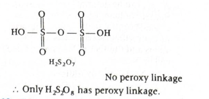
-
Step-by-step explanation
-
A peroxy bond is identified by directly looking for:
- \(-O-O-\)
-
In sulfur oxoacids, the acid that contains this peroxo
linkage is peroxodisulfuric acid:
- \(H_2S_2O_8\)
-
Its structure includes:
- \(HO-S(=O)_2-O-O-S(=O)_2-OH\)
- So the oxygen-oxygen bond is clearly present.
-
A peroxy bond is identified by directly looking for:
-
Concept used / theory behind it
- Peroxy acids are acids containing an \(O-O\) linkage.
- This bond is weaker than an ordinary \(O-H\) or \(S-O\) bond and is a special identifying feature.
- \(H_2S_2O_8\) is called peroxodisulfuric acid or Marshall’s acid.
-
Why the correct option is right
- Option (d) is correct because only \(H_2S_2O_8\) has the peroxy \((O-O)\) bond.
- This is why it is classified as a peroxo oxoacid.
-
Why other options are wrong
- (a) \(H_2S_2O_5\) does not contain an \(O-O\) linkage.
- (b) \(H_2S_2O_6\) also lacks a peroxy bond.
- (c) \(H_2S_2O_7\) is pyrosulfuric acid and does not have an \(O-O\) bond.
-
Exam tip / shortcut / elimination clue
-
In sulfur oxoacids, remember:
- \(H_2S_2O_8\) \(\rightarrow\) peroxo acid
- If the question asks for peroxy bond, immediately look for the acid famous for \(-O-O-\) linkage.
- Marshall’s acid is a common exam memory point.
-
In sulfur oxoacids, remember:
-
Final result
- The oxoacid with a peroxy bond is \(H_2S_2O_8\).
- So the correct option is (d).
-
Chapter / topic / subtopic
- Chapter: The \(p\)-Block Elements
- Topic: Oxoacids of sulfur
- Subtopic: Peroxo acids and peroxy linkage
- Correct answer: (b) \(8/3\).
- Explanation: When chlorine reacts with excess ammonia, ammonia gets oxidised and nitrogen gas is formed. The balanced reaction is \(3Cl_2 + 8NH_3 \rightarrow 6NH_4Cl + N_2\). From this, 3 moles of chlorine react with 8 moles of ammonia, so 1 mole of chlorine reacts with \(8/3\) moles of \(NH_3\).
-
Step-by-step explanation
- The important condition in the question is excess ammonia.
- Under excess \(NH_3\), chlorine does not mainly form \(NCl_3\). Instead, ammonia reduces chlorine and itself gets oxidised to nitrogen.
-
The balanced reaction is:
- \(3Cl_2 + 8NH_3 \rightarrow 6NH_4Cl + N_2\)
-
Now compare the mole ratio:
- \(3\) moles of \(Cl_2\) react with \(8\) moles of \(NH_3\)
-
Therefore, \(1\) mole of \(Cl_2\) reacts with:
- \(\frac{8}{3}\) moles of \(NH_3\)
- So \(Z = \frac{8}{3}\).
-
Concept used / theory behind it
- This is a reaction of chlorine with ammonia where the product depends on which reagent is in excess.
- With excess ammonia, nitrogen gas is formed.
- With excess chlorine, nitrogen trichloride \((NCl_3)\) may form, which is dangerous and explosive.
- So the phrase “excess ammonia” is the key clue in the question.
-
Why the correct option is right
-
Option (b) is correct because it directly comes from the
balanced stoichiometric ratio:
- \(\frac{8\ mol\ NH_3}{3\ mol\ Cl_2}\)
- Hence 1 mole of chlorine oxidises \(\frac{8}{3}\) moles of ammonia.
-
Option (b) is correct because it directly comes from the
balanced stoichiometric ratio:
-
Why other options are wrong
- (a) \(3/8\) is the inverse ratio.
- (c) \(2/3\) does not match the balanced equation.
- (d) \(3/2\) is also not obtained from the stoichiometric coefficients.
-
Exam tip / shortcut / elimination clue
-
Memorize this standard reaction:
- \(3Cl_2 + 8NH_3 \rightarrow 6NH_4Cl + N_2\)
- Always notice whether ammonia is excess or chlorine is excess, because the product changes.
- For stoichiometric questions, write the balanced equation first. That prevents sign or ratio mistakes.
-
Memorize this standard reaction:
-
Final result
- \(Z = \frac{8}{3}\).
- So the correct option is (b).
-
Chapter / topic / subtopic
- Chapter: The \(p\)-Block Elements
- Topic: Compounds and reactions of chlorine
- Subtopic: Reaction of chlorine with ammonia
- Correct answer: (a) Xe > Kr > Ar > Ne > He.
- Explanation: Noble gases are monoatomic and interact mainly through weak van der Waals’ forces. These forces increase with atomic size and molar mass. Therefore, heavier noble gases require more energy to vaporise, so their enthalpy of vaporisation is higher.
-
Step-by-step explanation
- Noble gases do not have strong intermolecular attractions like hydrogen bonding.
- The main force between their atoms is London dispersion force, a type of van der Waals’ force.
-
As we move down the group:
- atomic size increases
- number of electrons increases
- polarizability increases
- Hence van der Waals’ forces become stronger from \(He\) to \(Xe\).
- Stronger intermolecular attraction means more heat is needed to convert liquid into vapour.
-
So enthalpy of vaporisation increases in the order:
- \(He < Ne < Ar < Kr < Xe\)
-
Therefore, written in decreasing order:
- \(Xe > Kr > Ar > Ne > He\)
-
Concept used / theory behind it
- Enthalpy of vaporisation depends on the strength of intermolecular forces.
- For noble gases, stronger dispersion forces come from larger electron clouds.
- So the trend roughly follows increasing atomic mass and increasing polarizability.
-
Why the correct option is right
- Option (a) correctly places xenon at the top because it has the strongest intermolecular attractions among the listed gases.
- Helium comes last because it is the smallest and least polarizable noble gas.
-
Why other options are wrong
- (b) reverses the true trend.
- (c) and (d) mix the order incorrectly and do not follow the increase in van der Waals’ forces down the group.
-
Exam tip / shortcut / elimination clue
-
For noble gases, remember:
- larger atom \(\rightarrow\) stronger dispersion force \(\rightarrow\) higher boiling point and higher enthalpy of vaporisation
-
So the order usually follows:
- \(Xe > Kr > Ar > Ne > He\)
-
For noble gases, remember:
-
Final result
- The correct order is \(Xe > Kr > Ar > Ne > He\).
- So the correct option is (a).
-
Chapter / topic / subtopic
- Chapter: The \(p\)-Block Elements
- Topic: Noble gases and physical properties
- Subtopic: Trend in enthalpy of vaporisation
- Correct answer: (b) electronic configuration of \(Fe^{2+}\) is \(3d^6\) while that of \(Fe^{3+}\) is \(3d^5\).
- Explanation: \(Fe^{3+}\) is more stable because it has the half-filled \(3d^5\) configuration, which is especially stable due to symmetrical distribution and extra exchange energy. \(Fe^{2+}\) has \(3d^6\), which is not as stable as a half-filled \(d\)-subshell.
-
Step-by-step explanation
- Atomic number of iron is \(26\).
-
Ground-state electronic configuration of Fe is:
- \(Fe = (Ar)\ 3d^6 4s^2\)
-
When iron forms \(Fe^{2+}\), it loses the two \(4s\)
electrons first:
- \(Fe^{2+} = (Ar)\ 3d^6\)
-
When iron forms \(Fe^{3+}\), it loses one more electron:
- \(Fe^{3+} = (Ar)\ 3d^5\)
- \(3d^5\) is a half-filled subshell.
- Half-filled and fully filled subshells are extra stable.
- Therefore, \(Fe^{3+}\) is more stable than \(Fe^{2+}\).
-
Concept used / theory behind it
-
Special stability is associated with:
- half-filled subshells such as \(d^5\)
- fully filled subshells such as \(d^{10}\)
- This stability comes from symmetrical electron distribution and greater exchange energy.
- That is why many transition-metal ions prefer configurations like \(d^5\).
-
Special stability is associated with:
-
Why the correct option is right
-
Option (b) directly gives the real reason for the extra
stability:
- \(Fe^{2+} = 3d^6\)
- \(Fe^{3+} = 3d^5\)
- Since \(3d^5\) is half-filled, \(Fe^{3+}\) is comparatively more stable.
-
Option (b) directly gives the real reason for the extra
stability:
-
Why other options are wrong
- (a) is not a general rule. Greater charge does not automatically mean greater stability.
- (c) is true as a size trend, but it is not the reason for the special stability being asked here.
- (d) being coloured has nothing to do with why \(Fe^{3+}\) is more stable than \(Fe^{2+}\).
-
Exam tip / shortcut / elimination clue
-
Whenever you see transition-metal stability questions, first
check for:
- half-filled \((d^5)\)
- fully filled \((d^{10})\)
- These are classic exam-favourite stable configurations.
-
For iron specifically:
- \(Fe^{3+} = 3d^5\)
- That line alone often gives the answer.
-
Whenever you see transition-metal stability questions, first
check for:
-
Final result
- \(Fe^{3+}\) is more stable because it has the half-filled \(3d^5\) configuration.
- So the correct option is (b).
-
Chapter / topic / subtopic
- Chapter: \(d\)- and \(f\)-Block Elements
- Topic: Electronic configuration and stability of transition-metal ions
- Subtopic: Half-filled \(d\)-subshell stability
- Correct answer: (d) 6 6 6.
- Explanation: Secondary valence means coordination number, that is, the number of groups directly attached to the central metal inside the coordination sphere. Using the number of ionisable chloride or bromide ions from the \(AgNO_3\) reaction, we can infer the coordination formula of each complex. In all three cases, the coordination number comes out to be 6.
-
Step-by-step explanation
- Key idea: Excess \(AgNO_3\) precipitates only those halide ions that are outside the coordination sphere.
- Those outside ions are called ionisable or primary valence satisfying groups.
- The groups directly attached to the metal are non-ionisable and represent the secondary valence.
-
For complex (I): \(CoCl_3 \cdot 6H_2O\)
- It gives 3 moles of \(AgCl\) per mole of complex.
- So all 3 chloride ions are outside the coordination sphere.
-
Therefore the complex is:
- \([Co(H_2O)_6]Cl_3\)
- Inside the coordination sphere there are 6 water molecules.
- So the secondary valence \(=\) coordination number \(= 6\).
-
For complex (II): \(NiCl_3 \cdot 6H_2O\)
- It gives 2 moles of \(AgCl\).
- So 2 chloride ions are outside the coordination sphere and 1 chloride ion is inside.
-
Therefore the complex is:
- \([NiCl(H_2O)_5]Cl_2\)
-
Now count groups inside the coordination sphere:
- 1 chloride + 5 water molecules = 6
- So the secondary valence is again \(6\).
-
For complex (III): \(Co(SO_4)Br \cdot 5NH_3\)
- It gives 1 mole of \(AgCl\) precipitated as stated in the problem pattern, meaning one halide ion is outside the coordination sphere.
- So bromide is outside and sulfate is coordinated inside.
-
The complex is:
- \([Co(SO_4)(NH_3)_5]Br\)
-
Now count coordinating groups:
- 5 ammonia molecules
- 1 sulfate group acting as one coordinated group in this representation
- Total secondary valence \(= 6\).
-
Concept used / theory behind it
-
Werner’s theory distinguishes:
- Primary valence = ionisable valence, satisfied by ions outside the coordination sphere
- Secondary valence = non-ionisable valence, equal to coordination number
- \(AgNO_3\) helps detect free halide ions outside the sphere because they form silver halide precipitate.
- This is a classic way of determining the coordination sphere.
-
Werner’s theory distinguishes:
-
Why the correct option is right
- All three complexes, when reconstructed from the \(AgNO_3\) data, contain six groups directly bonded to the metal.
- So all three have secondary valence \(= 6\).
-
Hence the correct set is:
- I \(\rightarrow 6\), II \(\rightarrow 6\), III \(\rightarrow 6\)
-
Why other options are wrong
- Any option giving 4 for one of the complexes is incorrect because the coordination sphere count in each case becomes 6 after placing the ionisable halides outside.
- The \(AgNO_3\) precipitation data clearly shows how many anions are outside, and the remaining ligands complete coordination number 6.
-
Exam tip / shortcut / elimination clue
-
Use this quick method:
- Number of \(AgCl\) moles formed = number of free \(Cl^-\) ions outside the sphere
- Then rebuild the coordination complex and count the ligands inside the bracket.
- Secondary valence always means coordination number.
-
Use this quick method:
-
Final result
- The secondary valences are 6, 6, 6.
- So the correct option is (d).
-
Chapter / topic / subtopic
- Chapter: Coordination Compounds
- Topic: Werner’s theory
- Subtopic: Primary valence, secondary valence and use of \(AgNO_3\) test
- Correct answer: (b) (A) is true, (R) is true but (R) is not the correct explanation for (A).
- Explanation: Amino acids exist in aqueous solution as dipolar ions because the acidic \(( -COOH )\) group can donate a proton and the basic \(( -NH_2 )\) group can accept a proton, producing the zwitter ion form \(( -NH_3^+, -COO^- )\). The statement that most naturally occurring amino acids have L-configuration is also true, but it has nothing to do with why amino acids exist in dipolar form.
-
- Zwitter ion form of an amino acid
-
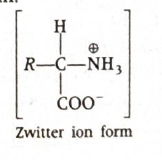
-
Step-by-step explanation
-
An amino acid contains both:
- an acidic carboxyl group \(( -COOH )\)
- a basic amino group \(( -NH_2 )\)
- In aqueous solution, an internal acid-base reaction takes place.
- The carboxyl group loses a proton, and the amino group accepts that proton.
-
So the amino acid exists mainly as:
- \(R-CH(NH_3^+)-COO^-\)
- This is called a dipolar ion or zwitter ion.
- Now look at the reason statement.
- It is true that most naturally occurring amino acids belong to the L-series.
- But L-configuration is about spatial arrangement around the chiral carbon, not about internal proton transfer.
- So both statements are true, but the reason does not explain the assertion.
-
An amino acid contains both:
-
Concept used / theory behind it
- Amino acids are amphoteric molecules because they contain both acidic and basic groups.
- That is why they can behave as both acids and bases.
-
The zwitter ion form explains important properties of amino
acids such as:
- high melting point
- solubility behavior
- existence of isoelectric point
- L-configuration, on the other hand, is a stereochemical classification and is unrelated to zwitter ion formation.
-
Why the correct option is right
- Assertion (A) is true because amino acids do exist in aqueous solution in dipolar or zwitter ion form.
- Reason (R) is also true because most naturally occurring amino acids are L-amino acids.
- But the reason is not the explanation of the assertion.
- Hence option (b) is correct.
-
Why other options are wrong
- (a) is wrong because although both statements are true, the reason is not the correct explanation.
- (c) is wrong because the reason is not false.
- (d) is wrong because the assertion is definitely true.
-
Exam tip / shortcut / elimination clue
- In assertion-reason questions, test each statement separately first.
- For amino acids, whenever you see “aqueous solution,” think zwitter ion.
- Whenever you see “L-configuration,” think stereochemistry.
- These two ideas are both true, but they belong to different concepts.
-
Final result
- Both (A) and (R) are true, but (R) is not the correct explanation for (A).
- So the correct option is (b).
-
Chapter / topic / subtopic
- Chapter: Biomolecules
- Topic: Amino acids
- Subtopic: Zwitter ion nature and configuration of amino acids
- Correct answer: (c) A - IV, B - I, C - II, D - III.
- Explanation: A primary alkyl halide with aqueous KOH undergoes \(S_N2\), a tertiary alkyl halide with water undergoes \(S_N1\), a primary alkyl halide with alcoholic KOH undergoes \(E2\), and tertiary alcohol in acidic medium dehydrates through \(E1\). Therefore the correct matching is A \(\rightarrow\) IV, B \(\rightarrow\) I, C \(\rightarrow\) II, D \(\rightarrow\) III.
-
- Reaction pathways for A, B, C and D
-
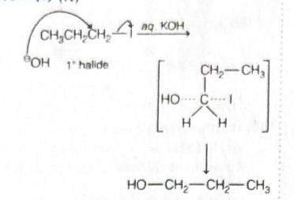
-
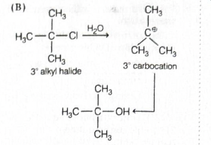
-
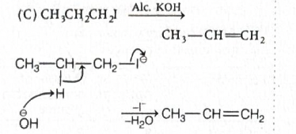
-
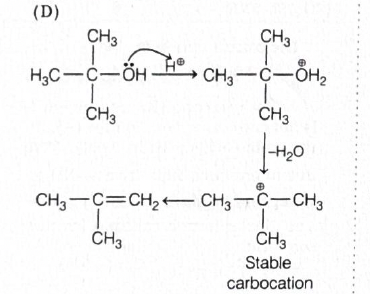
-
Step-by-step explanation
-
(A) \(CH_3CH_2CH_2I\) with aqueous KOH
- This is a primary alkyl halide.
- \(OH^-\) from aqueous KOH acts as a strong nucleophile.
- Primary alkyl halides favor backside attack.
- So the reaction proceeds through \(S_N2\).
- Thus \(A \rightarrow IV\).
-
(B) \((CH_3)_3CCl\) with \(H_2O\)
- This is a tertiary alkyl halide.
- Tertiary carbocation formed after departure of \(Cl^-\) is highly stable.
- Water is a weak nucleophile and polar protic medium favors carbocation formation.
- So the reaction proceeds through \(S_N1\).
- Thus \(B \rightarrow I\).
-
(C) \(CH_3CH_2CH_2I\) with alcoholic KOH
- Alcoholic KOH promotes elimination.
- A strong base removes \(\beta\)-hydrogen while iodide leaves.
- This happens in one concerted step.
- So the mechanism is \(E2\).
- Thus \(C \rightarrow II\).
-
(D) \((CH_3)_3COH\) with \(H^+\)
- Tertiary alcohol first gets protonated.
- Water leaves, producing a stable tertiary carbocation.
- Then elimination occurs to give alkene.
- This is a stepwise elimination mechanism.
- So the reaction follows \(E1\).
- Thus \(D \rightarrow III\).
-
Hence the complete match is:
- \(A \rightarrow IV,\ B \rightarrow I,\ C \rightarrow II,\ D \rightarrow III\)
-
(A) \(CH_3CH_2CH_2I\) with aqueous KOH
-
Concept used / theory behind it
-
\(S_N2\) is favored by:
- primary substrate
- strong nucleophile
- less steric hindrance
-
\(S_N1\) is favored by:
- stable carbocation
- tertiary substrate
- weak nucleophile in polar protic medium
- \(E2\) is favored by strong base, often alcoholic KOH.
- \(E1\) is common in dehydration of tertiary alcohols because stable carbocation forms first.
-
\(S_N2\) is favored by:
-
Why the correct option is right
-
Only option (c) gives all four matches correctly:
- A - IV
- B - I
- C - II
- D - III
-
Only option (c) gives all four matches correctly:
-
Why other options are wrong
- Any option assigning \(S_N1\) to a primary halide with aqueous KOH is wrong.
- Any option assigning \(S_N2\) or \(E2\) to tertiary halide with water is wrong because tertiary substrate strongly favors \(S_N1\).
- Any option not assigning \(E1\) to dehydration of tertiary alcohol in acidic medium is incorrect.
-
Exam tip / shortcut / elimination clue
-
Use this fast rule set:
- primary + aqueous KOH \(\rightarrow S_N2\)
- primary + alcoholic KOH \(\rightarrow E2\)
- tertiary halide + water \(\rightarrow S_N1\)
- tertiary alcohol + acid \(\rightarrow E1\)
- This pattern solves many direct matching questions quickly.
-
Use this fast rule set:
-
Final result
- The correct match is A - IV, B - I, C - II, D - III.
- So the correct option is (c).
-
Chapter / topic / subtopic
- Chapter: Haloalkanes and Haloarenes / Alcohols, Phenols and Ethers
- Topic: Nucleophilic substitution and elimination reactions
- Subtopic: \(S_N1\), \(S_N2\), \(E1\) and \(E2\) mechanism identification
- Correct answer: (d).
- Explanation: \(NaBH_4\) is a mild reducing agent. It reduces aldehydes and ketones to alcohols, but it does not normally reduce ester groups \(( -COOMe )\). Therefore, in the given molecule, only the terminal \(( -CHO )\) group is converted into \(( -CH_2OH )\), while the ester group remains unchanged. Hence the product shown in option (d) is formed.
-
- Starting substrate and selective reduction with \(NaBH_4\)
-
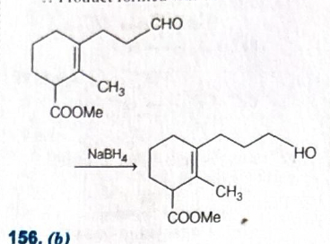
-
Step-by-step explanation
-
Look carefully at the functional groups present in the
substrate:
- one aldehyde group \(( -CHO )\)
- one ester group \(( -CO_2Me )\)
- one double bond in the ring
- Now check the reagent: \(NaBH_4\).
-
\(NaBH_4\) easily reduces:
- aldehydes \(\rightarrow\) primary alcohols
- ketones \(\rightarrow\) secondary alcohols
-
But it generally does not reduce:
- esters
- isolated \(C=C\) bonds
-
So only the side-chain aldehyde becomes:
- \(-CHO \rightarrow -CH_2OH\)
- The \(( -CO_2Me )\) group remains unchanged.
- The double bond in the ring also remains unchanged.
- Therefore the correct product is the one in which only aldehyde has been reduced, namely option (d).
-
Look carefully at the functional groups present in the
substrate:
-
Concept used / theory behind it
- This is a chemoselectivity question.
- Chemoselectivity means a reagent reacts with one functional group preferentially in the presence of another.
- \(NaBH_4\) is milder than \(LiAlH_4\).
- That is why \(NaBH_4\) reduces aldehydes and ketones but usually leaves esters untouched.
-
Why the correct option is right
-
Option (d) correctly shows:
- aldehyde reduced to alcohol
- ester unchanged
- double bond unchanged
- That exactly matches the action of \(NaBH_4\).
-
Option (d) correctly shows:
-
Why other options are wrong
- Any option showing reduction of \(( -CO_2Me )\) is wrong because \(NaBH_4\) does not normally reduce esters.
- Any option showing disappearance of the double bond is also wrong because \(NaBH_4\) is not used for simple alkene hydrogenation.
- So options that reduce more than the aldehyde are not correct.
-
Exam tip / shortcut / elimination clue
-
Memorize this comparison:
- \(NaBH_4\): aldehydes, ketones
- \(LiAlH_4\): aldehydes, ketones, esters, acids and more
- If both aldehyde and ester are present and reagent is \(NaBH_4\), reduce only the aldehyde.
-
Memorize this comparison:
-
Final result
- The major product is the one shown in option (d).
-
Chapter / topic / subtopic
- Chapter: Aldehydes, Ketones and Carboxylic Acids
- Topic: Reduction reactions
- Subtopic: Selective reduction by \(NaBH_4\)
- Correct answer: (b).
- Explanation: Phenol first forms sodium phenoxide with \(NaOH\). On treatment with \(CO_2\), Kolbe-Schmidt carboxylation occurs mainly at the ortho position to give salicylate. Acidification converts it to salicylic acid. Finally, treatment with \((CH_3CO)_2O/H^+\) acetylates the phenolic \(-OH\) group to give acetylsalicylic acid. Therefore the correct product is option (b).
-
- Kolbe-Schmidt carboxylation followed by acetylation
-
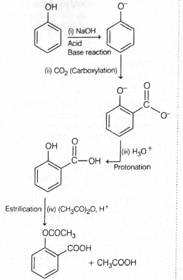
-
Step-by-step explanation
-
Step 1: Reaction with \(NaOH\)
- Phenol reacts with \(NaOH\) because phenol is weakly acidic.
- This gives sodium phenoxide.
-
Step 2: Reaction with \(CO_2\)
- Sodium phenoxide undergoes Kolbe-Schmidt reaction.
- Carboxylation occurs mainly at the ortho position.
- This gives sodium salicylate type intermediate.
-
Step 3: Acidification with \(H_3O^+\)
- The carboxylate salt is protonated to give salicylic acid.
-
Step 4: Reaction with \((CH_3CO)_2O, H^+\)
- Acetic anhydride acetylates the phenolic \(-OH\) group.
- The \(-COOH\) group remains as such.
- So the final product is o-acetoxy benzoic acid, also called acetylsalicylic acid.
- This matches option (b).
-
Step 1: Reaction with \(NaOH\)
-
Concept used / theory behind it
- This question is a reaction-sequence combination of two standard named reactions.
- Kolbe-Schmidt reaction: sodium phenoxide + \(CO_2\) gives mainly ortho-hydroxy benzoic acid after acidification.
- Acetylation: phenolic \(-OH\) reacts with acetic anhydride to form acetate ester.
- So salicylic acid becomes acetylsalicylic acid.
-
Why the correct option is right
-
Option (b) correctly shows:
- ortho carboxylic acid group from Kolbe-Schmidt reaction
- acetylated phenolic oxygen as \(-OCOCH_3\)
- That is exactly the expected final product.
-
Option (b) correctly shows:
-
Why other options are wrong
- Any option not showing ortho carboxylation is wrong because Kolbe-Schmidt mainly gives ortho product.
- Any option keeping the phenolic \(-OH\) unchanged after acetic anhydride treatment is wrong.
- Any option converting the \(-COOH\) group into the wrong acyl derivative is also incorrect here.
-
Exam tip / shortcut / elimination clue
-
Whenever you see:
- \(Phenol \xrightarrow{NaOH} phenoxide\)
- \(CO_2\)
- \(H_3O^+\)
- immediately think salicylic acid.
- If acetic anhydride comes next, think aspirin or acetylsalicylic acid.
-
Whenever you see:
-
Final result
- The major product is shown in option (b).
-
Chapter / topic / subtopic
- Chapter: Alcohols, Phenols and Ethers
- Topic: Reactions of phenols
- Subtopic: Kolbe-Schmidt reaction and acetylation of salicylic acid
- Correct answer: (b).
- Explanation: Bromocyclohexane first forms the Grignard reagent, which on reaction with \(CO_2\) and acid gives cyclohexanecarboxylic acid. Treatment with \(SOCl_2\) converts it into the acid chloride, and acid chlorides react with dialkyl cadmium reagents to give ketones. Since the reagent is \((CH_3)_2Cd\), the final product is cyclohexyl methyl ketone, which is shown in option (b).
-
- Reaction sequence from alkyl bromide to ketone
-
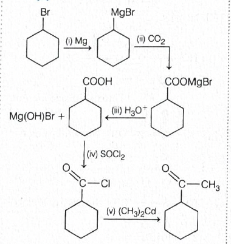
-
Step-by-step explanation
-
Step 1: Reaction with \(Mg\)
-
Bromocyclohexane reacts with magnesium to form the
Grignard reagent:
- \(C_6H_{11}Br \rightarrow C_6H_{11}MgBr\)
-
Bromocyclohexane reacts with magnesium to form the
Grignard reagent:
-
Step 2: Reaction with \(CO_2\)
- Grignard reagents attack carbon dioxide and form magnesium carboxylate.
-
So:
- \(C_6H_{11}MgBr + CO_2 \rightarrow C_6H_{11}COOMgBr\)
-
Step 3: Acidic hydrolysis \((H_3O^+)\)
-
The magnesium salt is hydrolysed to the carboxylic acid:
- \(C_6H_{11}COOH\)
-
The magnesium salt is hydrolysed to the carboxylic acid:
-
Step 4: Reaction with \(SOCl_2\)
-
Carboxylic acid is converted into acid chloride:
- \(C_6H_{11}COOH \rightarrow C_6H_{11}COCl\)
-
Carboxylic acid is converted into acid chloride:
-
Step 5: Reaction with \((CH_3)_2Cd\)
- Dialkyl cadmium reagents react with acid chlorides to give ketones.
-
Here a methyl group is transferred, so the product
becomes:
- \(C_6H_{11}COCH_3\)
- This is cyclohexyl methyl ketone, matching option (b).
-
Step 1: Reaction with \(Mg\)
-
Concept used / theory behind it
-
This question combines several standard organic conversions:
- alkyl halide \(\rightarrow\) Grignard reagent
- Grignard + \(CO_2\) \(\rightarrow\) carboxylic acid after hydrolysis
- carboxylic acid + \(SOCl_2\) \(\rightarrow\) acid chloride
- acid chloride + dialkyl cadmium \(\rightarrow\) ketone
- \((CH_3)_2Cd\) is milder than Grignard reagent and stops at the ketone stage instead of giving tertiary alcohol.
-
This question combines several standard organic conversions:
-
Why the correct option is right
- Option (b) correctly shows a methyl ketone attached to the cyclohexyl group.
- That is exactly what forms when cyclohexanecarbonyl chloride reacts with dimethyl cadmium.
-
Why other options are wrong
- (a) shows alcohol formation, which does not match the acid chloride + dialkyl cadmium step.
- (c) shows a secondary alcohol, which would arise from a different type of nucleophilic addition, not this sequence.
- (d) shows a tertiary alcohol, which is not the product of dialkyl cadmium with acid chloride.
-
Exam tip / shortcut / elimination clue
-
Memorize this useful conversion:
- \(RCOCl + R'_2Cd \rightarrow RCOR'\)
-
If you see \(CO_2\) after Grignard reagent, immediately
think:
- one extra carbon is added
- If \(SOCl_2\) comes after that, prepare for acid chloride chemistry.
-
Memorize this useful conversion:
-
Final result
- The major product is the ketone shown in option (b).
-
Chapter / topic / subtopic
- Chapter: Haloalkanes and Haloarenes / Aldehydes, Ketones and Carboxylic Acids
- Topic: Grignard reagents and acid chloride reactions
- Subtopic: Conversion of alkyl halide to ketone using \(CO_2\), \(SOCl_2\), and dialkyl cadmium
- Correct answer: (d) \(alc.\ KOH,\ NaOI\).
- Explanation: In the first step, the alkyl bromide undergoes dehydrohalogenation with alcoholic KOH to form the \(\alpha,\beta\)-unsaturated methyl ketone shown as the major product. In the second step, the methyl ketone reacts with sodium hypoiodite \((NaOI)\) and gives haloform cleavage, producing the carboxylate salt and iodoform. Therefore \(X = alc.\ KOH\) and \(Y = NaOI\).
-
- Elimination followed by haloform reaction
-
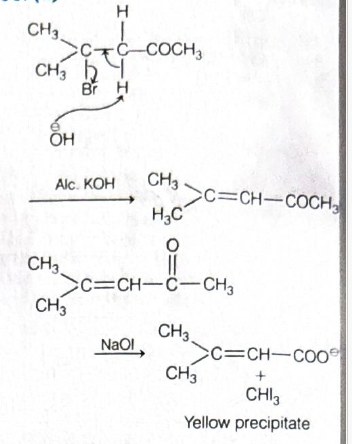
-
Step-by-step explanation
-
Step 1: Identify the first transformation
- The starting compound is a bromo ketone.
-
The product after step \(X\) is an alkene:
- \((CH_3)_2C=CHCOCH_3\)
- This means \(HBr\) has been eliminated.
- Dehydrohalogenation of alkyl halides is commonly done using alcoholic KOH.
- So \(X = alc.\ KOH\).
-
Step 2: Identify the second transformation
-
The intermediate still contains a methyl ketone unit:
- \(-COCH_3\)
-
The final products shown are:
- a carboxylate ion
- \(CHI_3\) as yellow precipitate
- This is the classic iodoform reaction or haloform reaction of a methyl ketone.
-
The reagent that produces this is sodium hypoiodite:
- \(NaOI\)
- So \(Y = NaOI\).
-
The intermediate still contains a methyl ketone unit:
-
Step 1: Identify the first transformation
-
Concept used / theory behind it
- Alcoholic KOH favors elimination \((E2)\), especially dehydrohalogenation of alkyl halides.
-
Iodoform reaction is given by compounds
containing:
- \(-COCH_3\)
- or groups oxidisable to \(-COCH_3\)
- In the haloform reaction, the methyl group next to carbonyl is converted into \(CHI_3\), and the rest of the molecule becomes carboxylate.
-
Why the correct option is right
-
Only option (d) matches both required transformations
correctly:
- formation of alkene by elimination with \(alc.\ KOH\)
- iodoform cleavage of methyl ketone with \(NaOI\)
-
Only option (d) matches both required transformations
correctly:
-
Why other options are wrong
- (a) \(aq.\ KOH\) usually favors substitution, not the required elimination, and \(CrO_3\) does not produce iodoform cleavage.
- (b) copper and heat do not fit the second transformation to carboxylate plus \(CHI_3\).
- (c) \(aq.\ NaHCO_3\) cannot perform dehydrohalogenation here, and \(KMnO_4\) would give oxidation, not the haloform pattern shown.
-
Exam tip / shortcut / elimination clue
-
If the product shows \(CHI_3\) or yellow precipitate,
immediately think:
- iodoform reaction
- If an alkyl halide becomes an alkene in one step, alcoholic KOH is a very strong clue.
-
So this question can be cracked by spotting:
- alkene formation \(\rightarrow alc.\ KOH\)
- \(CHI_3\) formation \(\rightarrow NaOI\)
-
If the product shows \(CHI_3\) or yellow precipitate,
immediately think:
-
Final result
- \(X = alc.\ KOH\) and \(Y = NaOI\).
- So the correct option is (d).
-
Chapter / topic / subtopic
- Chapter: Haloalkanes and Haloarenes / Aldehydes, Ketones and Carboxylic Acids
- Topic: Elimination and haloform reaction
- Subtopic: Dehydrohalogenation and iodoform test of methyl ketones
- Correct answer: (a) (i) > (ii) > (iii) > (iv).
- Explanation: Acid strength depends on the stability of the conjugate base formed after loss of \(H^+\). Among these compounds, the conjugate base of \(H-C \equiv C-COOH\) is most stabilised because the adjacent carbon is \(sp\)-hybridised and has the highest electron-withdrawing effect. The acrylic acid derivative comes next, then propionic acid, and alcohol is the weakest acid.
-
Step-by-step explanation
-
To compare acidity, first ask:
- Which molecule gives the most stable conjugate base?
-
The four compounds are:
- (i) propiolic acid type: \(H-C \equiv C-COOH\)
- (ii) acrylic acid: \(CH_2=CH-COOH\)
- (iii) propionic acid: \(CH_3-CH_2COOH\)
- (iv) ethanol: \(CH_3-CH_2OH\)
- Carboxylic acids are much stronger acids than alcohols because carboxylate ion is resonance-stabilised, while alkoxide ion is not similarly stabilised.
-
So immediately:
- (i), (ii), (iii) are all stronger than (iv)
- Now compare the three carboxylic acids.
- The group attached to \(-COOH\) influences acidity through inductive effect.
- An \(sp\)-hybridised carbon withdraws electrons more strongly than an \(sp^2\)-hybridised carbon, which in turn withdraws more strongly than an \(sp^3\)-hybridised alkyl carbon.
-
So the electron-withdrawing order is:
- \(sp > sp^2 > sp^3\)
-
Therefore acidity follows:
- \(H-C \equiv C-COOH > CH_2=CH-COOH > CH_3CH_2COOH\)
-
Including ethanol at the end:
- (i) > (ii) > (iii) > (iv)
-
To compare acidity, first ask:
-
Concept used / theory behind it
- Acidity increases when the conjugate base becomes more stable.
- Electron-withdrawing groups stabilize the negative charge on carboxylate ion by inductive effect.
-
Greater \(s\)-character means greater electronegativity of
the attached carbon:
- \(sp\) carbon is more electron-withdrawing than \(sp^2\)
- \(sp^2\) is more electron-withdrawing than \(sp^3\)
- Alcohols are much less acidic than carboxylic acids.
-
Why the correct option is right
-
Option (a) correctly reflects:
- maximum acidity for the alkyne-substituted acid
- then the alkene-substituted acid
- then the saturated acid
- and alcohol as the weakest
-
Option (a) correctly reflects:
-
Why other options are wrong
- (b) is completely reversed and incorrectly places alcohol as strongest acid.
- (c) wrongly places acrylic acid above the alkyne-substituted acid and also misplaces the alcohol-acid comparison.
- (d) wrongly places the saturated acid as strongest.
-
Exam tip / shortcut / elimination clue
-
For acids attached to unsaturated carbons, remember:
- more \(s\)-character on adjacent carbon \(\rightarrow\) stronger \(-I\) effect \(\rightarrow\) stronger acid
-
And always remember:
- carboxylic acid \(\gg\) alcohol in acidity
-
For acids attached to unsaturated carbons, remember:
-
Final result
- The correct order of acidic strength is (i) > (ii) > (iii) > (iv).
- So the correct option is (a).
-
Chapter / topic / subtopic
- Chapter: Organic Chemistry - General Organic Chemistry / Aldehydes, Ketones and Carboxylic Acids
- Topic: Acid strength and inductive effect
- Subtopic: Stability of conjugate base and effect of hybridisation on acidity
- Correct answer: (c) N-ethyl-N-methylbenzenamine.
- Explanation: The nitrogen atom is attached to three groups: phenyl, methyl and ethyl. The parent is taken as benzenamine because the amino nitrogen is directly attached to the benzene ring. The other two groups attached to nitrogen are named as \(N\)-substituents in alphabetical order: ethyl before methyl. Hence the correct IUPAC name is N-ethyl-N-methylbenzenamine.
-
- Structure of the tertiary aromatic amine
-
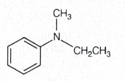
-
Step-by-step explanation
-
First identify the functional group:
- It is an amine.
-
Now see what is attached to nitrogen:
- one phenyl group
- one methyl group
- one ethyl group
-
Since nitrogen is directly attached to benzene, the parent
is taken as:
- benzenamine
- The other two groups attached directly to nitrogen are treated as \(N\)-substituents.
-
These are:
- \(N\)-ethyl
- \(N\)-methyl
- Substituent names are written in alphabetical order.
- Ethyl comes before methyl.
-
So the name becomes:
- \(N\)-ethyl-\(N\)-methylbenzenamine
-
First identify the functional group:
-
Concept used / theory behind it
- For substituted amines, choose the parent chain or ring attached to the amino group.
- When extra alkyl groups are attached to nitrogen, they are written using the prefix \(N\)-.
- Alphabetical order is applied to the substituent names.
- This compound is a tertiary amine because nitrogen is attached to three carbon groups.
-
Why the correct option is right
-
Option (c) correctly identifies:
- the parent as benzenamine
- the nitrogen substituents as ethyl and methyl
- their alphabetical order as ethyl before methyl
-
Option (c) correctly identifies:
-
Why other options are wrong
- (a) has the right substituents but the alphabetical order is wrong.
- (b) incorrectly takes ethanamine as the parent.
- (d) incorrectly takes methanamine as the parent and treats phenyl improperly in this context.
-
Exam tip / shortcut / elimination clue
-
When nitrogen is attached directly to benzene, think:
- aniline-type parent \(\rightarrow\) benzenamine
- Then list other groups on nitrogen with \(N\)-prefixes in alphabetical order.
- This instantly helps eliminate options with wrong parent choice.
-
When nitrogen is attached directly to benzene, think:
-
Final result
- The IUPAC name is N-ethyl-N-methylbenzenamine.
- So the correct option is (c).
-
Chapter / topic / subtopic
- Chapter: Amines
- Topic: IUPAC nomenclature of amines
- Subtopic: Naming tertiary aromatic amines